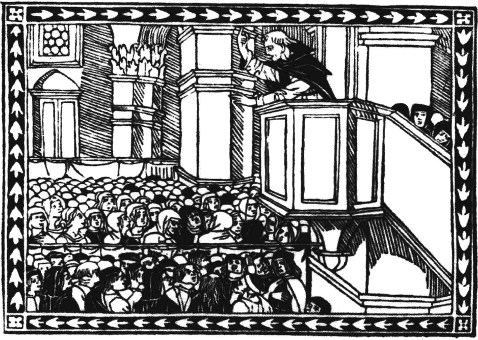

胡斯托.冈萨雷斯(JustoL.Gonzalez，1937-)是当代西方著名的基督教神学家和历史学家，原籍古巴。他在古巴从事神学教育多年；后定居美国，在美国耶鲁大学获得了历史神学硕士和博士学位；多年来，在亚特兰大埃默利大学坎特拉神学院(Candler School of Theology，Emory University)教授基督教思想史，现在是一位独立学者和作家。他在基督教神学和历史方面的专著已超过二十多种。其中著名的三卷本《基督教思想史》(A History of Christian Thought)，作于1970年至1975年间，英译本在美国由艾宾顿出版社(Abingdon Press)出版，已经重印超过二十次，被美国和其他英语国家多所大学和神学院采用，作为教科书或主要的参考书。中译本由金陵协和神学院组织翻译，于2002年出版(三卷合订本)，作为金陵协和神学院建校五十周年的庆典献礼，已为我国和周边汉语地区及国家的大学和神学院作为教材或参考书使用。第二版(分三卷印刷)已由译林出版社于2010年出版。
作为《基督教思想史》的“姐妹篇”，冈萨雷斯的另一部成名之作是两卷本的《基督教史》(The Story of Christianity)，作于1984至1985年间。全书分上下两卷：上卷从第1世纪到16世纪初宗教改革前夕；下卷从16世纪宗教改革开始到20世纪。这部书二十多年来被美国许多神学院用作教会史的课本。冈萨雷斯的夫人凯瑟琳.G.冈萨雷斯(Catherine Gunsalus Gonzalez)在亚特兰大哥伦比亚神学院担任教会史教授，用的也是这部书。金陵协和神学院研究科几年来也用这部书作教会史课程的教材。
本书的另一个特点是它的普世主义(ecumenism)精神。这包含两重意义：首先，它摆脱了以前许多基督教史偏重以欧美基督教为中心的倾向。以前许多“标准的”教会史都免不了着重叙述欧美基督教而忽略了“第三世界”的教会，如菲利普.沙夫(Philip Schaff)的八卷本《基督教史》(History of the Christian Church)和威利斯顿.华尔克
(Williston Walker)的《基督教会史》(A History of the Christian Church)——三次修订，三种汉译本。事实上，19世纪以前的基督教世界的确是以欧美教会为中心。可是自20世纪以来，随着宣教运动的展开，基
督教正在向“第三世界”、尤其是向南半球转移发展。相对而言，基督教的“老根据地”欧美教会正在走向衰落，而富有生气的南半球教会正逐步成为世界基督教的重心。冈萨雷斯的这部教会史及时地、生动地反映了这一重要的“重心转移”动向。其次，本书的“普世性”还包括它在神学上的“中立性”，它避开了某些现代著作倾向于对近代“福音派”发展的叙述而忽略了对历史上基督教整体的、客观的回顾。这一方面的特点可以通过对几部现代基督教历史著作的比较中看出来。例如，布鲁斯.雪莱(Bruce L.Shelley)的《基督教会史》(Church History in Plain Language)和罗杰.奥尔森(Roger Olson)的《基督教神学思想史》(The Story of Christian Theology)。前者的中译本由北京大学出版社(2004年)出版，后者分别由台湾校园书房出版社(2002年)和北京大学出版社(2003年)出版。这两部书的作者都是美国当代较明显倾向于“现代福音派”的学者。建议有兴趣和时间的读者不妨对这几部历史书进行对比，作出自己的判断。
或许令人感到奇怪的是，历史需要得到重访、修订和重写；而历史尚在继续。之所以如此，乃因为历史从来就不单单是如其实际发生的赤裸往昔；历史是我们通过现存史料所读出的过去，是由无数代历史学家删选过的往昔，并且是从我们自身的现在与我们所希望的未来予以解释的过去。因此，当我现在再次阅读自己在大约二十五年前写成的《基督教史》时，我发现许多内容值得再次肯定，也有许多内容需要重新修改。本书第一版面世几年后，苏联解体。后来，伊斯兰教复兴，伊斯兰世界之外的人们开始发现，穆斯林极端主义者在世界各地密谋和实施了恐怖主义行动。在基督教内部，五旬节运动(Pentecostalism)和其他几个类似运动，同时在传统的基督教地区以及其他地区发展壮大，并占据了中心舞台。在许多这样的地区，新的宗教兴起，其中有许多是受到基督教启发，并从基督教吸收了一些因素。最终，可能爆发的生态灾难引起各国政府及其领导人的重视。世界经济秩序的可持续性遭到强烈质疑。而质疑不仅来自激进的意识形态分子，也来自德高望重的经济学家。通讯技术也获得迅猛发展。这些进展——还有更多的进展——已经塑造了我们看待过去与未来的方式。因此，对本书作出修订是十分必要的。出版这样一部修订版还有另一个难以抗拒的理由，就是我希望把初版后这些年间所收集到的许多意见与建议融合进这部《基督教史》，其中有一些是由阅读和使用英文版《基督教史》的同事提出的，另一些则是源于本书的诸多译本进入了差异性很大的文化——因为翻译过程中暴露了一些在原文中未被直接注意到的含混之处。阅读这部《基督教史》的学生和同事来自广为不同的文化——如日本的、巴西的、俄罗斯的和韩国的，他们拓宽了我就本书应该包含的内容范围。但是，我在这个修订版中并没有融入他们的所有建议(就某个主题而言，有的人希望着墨多些，有的人则希望着墨少些，要同时满足这两拨人是不可能的)。但是，我深深地感激所有这些人，尤其是那些学生，他们告诉我，我对某个主题的讲述还不够清晰，或某个主题对他们极具启发。在提出宝贵建议的同事中，我必须再次感谢我的妻子凯瑟琳，因为她无比耐心地阅读和重读了我的手稿，并向我提出了明智的建议。我也要特别感谢圣迭哥的伯特利神学院(Bethel Seminary San Diego)教授詹姆斯.史密斯三世(James D. SmithIII)，因为他的许多详细的建议极大地改进了本书的品质。
按照惯例，作者应当在序言中感谢为一部著作的成书做出贡献的人。然而，我发现不可能做到这一点，因为我不得不列出一个长长的学者名单，其中既有在世的，也有过世的：奥利金、优西比乌、印卡.加西拉索.德拉维加(Inca Garcilasodela Vega)、哈纳克，以及许许多多抄写和重新抄写手稿的无名修士。但是，在我的同时代人当中，有两位是我必须提到的。第一位是我的妻子，佐治亚州迪凯特市哥伦比亚神学院的教会史教授凯瑟琳.G.冈萨雷斯(Catherine G. Gonzalez)。在过去十年中，她陪伴我与古圣先贤一同走完这段旅程，她对我书稿的阅读和评论是非常宝贵的。对第二位的提名，是我们这个时代的一个神迹，因为它是我这六年来的住家全职秘书：文字处理器，我靠它制作本书稿。的确，通常在序言中给予打字员的许多赞美之词，也可以献给我的文字处理器：耐心、认真、毫无怨言、始终乐于服务。这位“秘书”一遍遍打出我的手稿，除了偶尔的滴滴声，它的确毫无怨言。但是，就在我即将完稿之际，一场电力故障迫使我再次提笔写作。这就令我想到，我们有时并不像自己想象的那样，离奥利金和优西比乌的时代那么遥远!
总的来说，罗马人对被征服者的宗教与习俗所采取的政策是相当宽容的。在罗马帝国征服巴勒斯坦之后不久，罗马政府就给予马加比家族后裔一定的权力，并利用他们统治巴勒斯坦，将他们分封为大祭司和总督。公元前40年，大希律(Herod the Great)被罗马人任命为犹大的分封王，他可以说是马加比家族的一个远亲，因为他的妻子是马加比家族的直系后代。
散居各地的犹太人被迫接受了希腊化文明，而留在巴勒斯坦的犹太人却可以依然持守自己的信仰。在犹太人中，尤其是在亚历山大的犹太人中，出现了一场运动，试图证明犹太人的古老信仰与最好的希腊化文化并不矛盾。早在公元前3世纪，就有犹太学者尝试以公认的希腊记史方来重述以色列的历史。但是，这整个传统的顶峰是亚历山大的斐洛(Philo of Alexandria)所做的工作。他与耶稣是同代人。他试图证明，最好的异教哲学与希伯来圣经并不矛盾。他声称，既然希伯来先知要早于希腊哲学家，那么希腊哲学家的智慧就一定是取自于他们。他认为，这样的吻合之处有很多，因为哲学家的学说在根本上与圣经中的教导一致，差别只在于圣经是用比喻来说话。这反而意味着，必须要用寓意解经的方法来理解圣经。斐洛试图用寓意解经法证明，圣经中的上帝就是哲学家的“太一”(theOne)，从本质上讲，希伯来人的道德教导与希腊哲学家最好的道德教导也是一致的。在早期基督徒努力向异教世界证明自己的信仰之可信性时，上述论证为他们提供了充足的装备。
重现约翰晚期的侍奉生涯也很复杂，因为约翰这个名字频繁出现在早期的文献中。有一个古老的传说称，约翰在一个滚烫的油锅中被烫死。但是，几乎就在同一时期，《启示录》的记载是，约翰被放逐到拔摩岛。另有一个十分可信的传说称，约翰是以弗所的教师，于公元100年左右死于以弗所。所有这一切都表明，至少有两个基督徒叫约翰，而后来的传说将他们混淆了。公元2世纪的一位基督教作家希拉波利的帕皮亚(Papias of Hierapolis)证实，在早期的教会中的确有两个名叫约翰的人：一位是使徒约翰，一位是以弗所的长老，就是在拔摩岛得见异象的约翰。我们可以从他们使用希腊文的巨大差异中明显看出，撰写《启示录》的约翰并不是第四福音书，即普遍所说的《约翰福音》的作者。不管怎样，在公元1世纪末的以弗所，的确有一位名叫约翰的教师，他在小亚细亚的所有教会中都享有极大的权威。
自尼禄统治时起，罗马帝国就已经开始逼迫基督徒。但我们对公元1世纪时逼迫的细节知之甚少。到了公元2世纪，关于逼迫的记载多了起来，令我们可以清楚地了解到逼迫中的问题，以及基督徒对殉道的态度。在这些记载中，最为生动的是《殉道记》，它们讲述了各位殉道士的被捕、受审和殉道。其中一些记载了审判的许多可信的细节，似乎是从法庭的官方记录中摘取出来的——至少其中一部分是这样。我们有时得知，作者亲眼目睹了殉道士的受审与殉道，而历史学家也倾向于相信他们的确在场。另一方面，还有许多所谓的《殉道记》显然是在很久以后写成，并不足以为信。但不管怎样，内容属实的《殉道记》是早期基督教最为珍贵、最鼓舞人心的一些文献。其次，我们也通过其他基督徒的著作了解到早期基督徒对殉道的态度。在这些著作中，最有价值的也许是年迈的安提阿主教伊格纳修(Ignatius of Antioch)在殉道途中写下的七封书信。最后，公元2世纪又让我们进一步了解到罗马帝国对基督教这个新生信仰的态度。就这一点而言，小普林尼(Pliny the Younger)与图拉真(Trajan)的通信是最能说明问题的。
在全部记载中非常重要的一点是，波利卡普在得知自己正被搜查时逃跑了，而且还藏了起来。我们在同一份文献中还得知，一个叫昆图斯(Quintus)的人主动去殉道，但在最后一刻他软弱了，放弃了自己的信仰。这对早期基督徒来说非常重要，因为他们相信，殉道并不是个人的选择，而是上帝拣选某人去做的事情。被拣选者会得到与他们一起受苦的基督加添的力量，从而能够坚定不移。他们的坚定并不是他们自己的作为，而是上帝的作为。另一方面，自告奋勇、主动殉道的基督徒——“自发的殉道士”——则是假殉道士，基督会遗弃他们。然而，并不是所有基督徒都赞同《波利卡普殉道记》(Martyrdom of Polycarp)的作者。在整个逼迫期间，偶尔仍会有自发的殉道士。而且，他们也坚定到最后，并赢得了许多人的赞扬。这可以在当时的另外一份文献、殉道者查士丁(Justin the Martyr)的《护教篇》(Apology)中看出；我们在其中得知，在对某个基督徒的审讯中，另外两个基督徒主动为他辩护，结果三个基督徒全部殉道。在讲述这个故事时，查士丁丝毫没有向我们暗示，两位自发殉道士的殉道不及最初受到指控的那位基督徒的有效。
现存最早的护教文可能是《致丢格那妥书信》，其作者不详，也许是古代历史学家所提到的某个叫夸德拉图斯(Quadratus)的人，他大约生活在公元2世纪初。随后不久，亚里斯蒂德(Aristides)在公元138年之前写了一篇护教文——最近才被人发现。但是，早期最著名的护教士是查士丁，我们在上一章中已经讲过他的殉道，他是最早记载基督徒崇拜-—我们会在以后讲到——的基督教作家之一。查士丁曾经历了一段漫长的灵魂朝圣之旅，从一个学派来到另一个学派，直到在基督教中找到了他所说的“真哲学”。他有三部著作现存于世：两篇护教文和《与特里弗谈话录》(Dialogue with Trypho)。前者其实是一部著作的两个部分，后者是与一位犹太拉比的对话。查士丁的学生塔提安(Tatian)写了《致希腊人书》(Address to the Greeks)，而几乎就在同一时期阿萨纳戈拉斯(Athenagoras)完成了《为基督徒辩》(A Plea for the Christians)和一篇论文《论死人复活》(On the Resurrection of the Dead)。安提阿的主教提阿非罗(Theophilus)于公元2世纪末撰写了三卷《致奥托吕库斯》(To Autolycus)，分别论述了上帝、释经方法和基督徒的生活。公元2世纪的这些护教文和奥利金(Origen)于公元3世纪撰写的《驳塞尔修斯》(Against Ceisus)都是用希腊文写成的。
数百年来，历史学家们实际上只能通过异教研究者——驳斥诺斯替主义及其教条的基督教作家——的描述来研究基督教的诺斯替主义。少数现存的诺斯替派著作残篇并不足以纠正或评断异教研究者所告诉我们的。后来，一大批诺斯替派著作于1945年在埃及的拿哈马迪(Nag Hammadi)被发现。其中就包括相当早的《多马福音书》(Gospel of Thomas)和稍晚一些的瓦伦廷(Valentinus)的《真理福音书》(Gospel of Truth)。瓦伦廷是一位重要的诺斯替派人物，异教研究者描述过他的教义，但对它们有所曲解。出于多种原因，这批诺斯替派的著作直到20世纪70年代才被公众与学者所知，人们才可以读到它们。它们与另一些发现——包括于2006年出版的《犹大福音书》(Gospel of Judas)——纠正并补充了异教研究者所告诉我们的内容。
我们应当知道，在基督教历史的最初四五百年，至少有几十部——也可能是几百部——关于马利亚与使徒事迹的福音书和著作。这一点非常重要。但是，这些著作并未试图成为正典，教会也没有查禁其中的一些。实际上，非正典福音书分为两类。第一类是诺斯替派福音书，其中一些主要成书于公元2世纪——《多马福音书》或许是个例外，它的一些材料可能出现得更早。每一部诺斯替派福音书都被某个诺斯替派视为经典，而他们同时又否定其他所有诺斯替派福音书，因此，他们根本就无意让自己的福音书成为新生的新约正典的一部分。正统基督教和基督教诺斯替派都从未将这些福音书视为正典的一部分，因为教会并不认可诺斯替派福音书，而诺斯替派则认为，只有一部上帝所默示的福音书。第二类非正典福音书主要成书于公元3世纪或更晚，其中包括有关耶稣的信仰故事。教会从未否定这些福音书，只是并没有将它们纳入新约正典——圣书目录。它们又被阅读了几百年，并且很少遭到反对。在中世纪的大教堂中，经常可以看到一些雕刻与绘画，描述的就是这些福音书中的情节。《雅各第一福音书》(Protoevangelium of James)就是众多例子之一。它讲述了马利亚的父母——约阿希姆(Joachim)和亚拿(Anna)——的故事。这个故事被公认为基督教传统的一部分，且经常可以在中世纪的艺术与文学中看到。
在这些信经中，一个较早与较短的信经就是我们今天所说的《使徒信经》(Apostles's Creed)。有这样一个完全虚构的传说：耶稣的十二使徒在开始宣教与撰写信经之前聚在一起，他们每人写出一条，就这样写成了《使徒信经》。实际上，《使徒信经》的基本内容可能是公元150年左右在罗马收集整理的。由于是在罗马使用，所以学者们将古代的《使徒信经》称为“R”。不过，它当时被称为“信仰标志"(symbol of faith)。但标志一词在这里的含义并不是我们今天所说的意思，而是一种“承认的方式”(means of recognition)，就像是一位将军交给信使的信物，以便收信人据此认出真的信使。同样，在罗马被收集整理的这个标志，被基督徒用来分辨真信徒与信仰当时各种异端的人，尤其是诺斯替主义与马西昂主义。任何认信这一信经的人既不是诺斯替派，也不是马西昂派。
在教会生活的最初几十年，基督徒撰写的大多数著作都是处理具体或特定的问题。例如，保罗的书信。保罗写每一封书信都是受到特定情况的驱使，他并未试图在任何一封书信中讨论基督教的所有教义。在使徒时代之后，基督教的著作一度也是如此。这个时代的各位基督教作家被共同称为使徒教父(Apostolic Fathers)。他们的著作被保存下来，其中每部都是处理非常具体的问题。安提阿的伊格纳修的书信就是这样——我们之前已经讲过。同样，罗马的克莱门(Clement of Rome)于公元1世纪末写了《致哥林多人书》(Epistle to the Corinthians)，而促使他写下这封书信的问题也类似于保罗给哥林多教会的书信中所处理的问题。《十二使徒遗训》(Didache； Teaching of the Twelve Apostles)是指导基督徒生活与崇拜的纪律手册。但是，它实际上并不是十二使徒所著，而是一个我们并不知道姓名的基督徒所写，而且我们也不知道它的成书时间与地点。《黑马牧人书》(Shepherd of Hermas)是罗马主教的一个兄弟于公元2世纪中期写的，主要是处理洗礼之后的赦罪问题。总而言之，所谓的“使徒教父”的所有著作都是处理单一的问题，并没有哪部试图详细地阐释基督教的全部教义。查士丁与其他在公元2世纪下半叶著述的护教士也是如此。他们的大多数著作都与逼迫有关，并没有哪一部论述了基督教的全部教义。
首先，爱任纽是位牧者。他对哲学思辨与钻研尚未解开的奥秘并没有特别的兴趣，而是专注于指导他所牧养的基督徒的生活与信仰。因此，在自己的著作中，他并不想飞上思辨的高空，只想驳斥异端与教导信徒。他只有两部著作现存于世：《使徒宣道论证》(Demonstration of Apostolic Faith)和《驳斥所谓的真知》(Refutation of the So-called Gnosis)——也被称为《驳异端》(Against Heresies)。在《使徒宣道论证》中，他就一些教义对他所牧养的基督徒进行了教导。在《驳异端》中，他试图驳斥诺斯替主义。他撰写这两部著作的目的是阐明他从老师那里学到的信仰，而不是用自己的思辨为信仰增添光彩。因此，爱任纽的著作出色地见证了公元2世纪末的教会信仰。
在《劝勉异教徒》(Exhortation to the Pagans)中，克莱门利用了柏拉图和其他哲学家的理论，这让我们看到他神学方法的要点。“我追求认识上帝，不只是上帝的作为。谁会帮助我探索?......哦，柏拉图，我们该怎样寻找上帝?”克莱门说这段话的目的是向异教读者表明，基督教的许多教义可以得到柏拉图哲学的支持。因此，异教徒可以探讨基督教，而不是像许多异教徒理所当然地认为的，基督教是无知者与迷信之人的宗教。
德尔图良与克莱门极其不同。他似乎是北非的迦太基人。虽然他一生的大部分时间都是在迦太基度过的，但他是大约四十岁时在罗马归信基督教的。回到迦太基之后，他撰写了许多论文，有的是维护信仰，驳斥异教徒；有的是捍卫正统，驳斥异端。他的许多著作因不同的原因而非常重要。例如，他的论文《论洗礼》(On Baptism)是现存最早论述洗礼的论文，是我们了解早期洗礼惯例的重要文献。他的著作《致他的妻子》(To His Wife)让我们对公元2世纪的基督徒婚姻有了些许有趣的了解。德尔图良是位律师，至少受过修辞学训练，他的全部著作都带有法律思想的印记。在早前的一章中，我们引用过他对图拉真的“不公判罚”所提出的抗议：图拉真下令，不必调查基督徒，如果被带到官员面前，他们就应当受到惩罚。德尔图良的抗议读起来像是在高等法院为一起案件辩护的律师所使用的辩词。在另一部著作《论灵魂的见证》(On the Witness of the Soul)中，德尔图良将人类的灵魂送上了证人席，他在审问灵魂之后得出结论，灵魂是“天生的基督徒”，如果它坚持拒不接受基督教，这是因为顽固与愚昧。
在论文《剥夺异端权利》(Prescription against the Heretics)中，德尔图良的法律思想大放异彩。在当时法律用语中，剥夺权利(Prescription)至少有两个意思。它可以是在案件开始审理之前提交给法庭的法律论据，以证明审判不应该进行。在案件实际开始审理之前，如果案件的一方能证明另一方无权提出诉讼，或诉讼提出得并不合法，或法庭根本就没有司法审判权，审判就会被取消。但是，当我们说到“长期剥夺权利”时，这个词就有了不同的意思。它的意思是，如果一方在一段时期内毫无争议地拥有一份财产，这一方就成为合法的物主，即使后来又有另一方对此提出要求。
奥利金撰写了大量著作。他注意到不同版本的圣经存在差异，因此，他编订了《六文本合参圣经》。这是六种文本对照的旧约，包括希伯来文本、希伯来文本的希腊音译本——这令不懂希伯来文这一古老语言的读者至少可以对它的发音有所了解——以及四个不同的希腊文译本。此外，《六文本合参圣经》还附有一整套说明异文、省略与添加的符号。除了这项伟大的杰作之外，奥利金还为圣经的许多书卷撰写了注释，还有我们已经引用过的护教文《驳塞尔修斯》和一部系统神学巨著《论第一原理》(On First Principles)。他的这些著作很大一部分都是他口述的，据说，他有时可以同时向多位秘书口述七部著作。
《圣佩尔培图阿与圣菲里西塔斯殉道记》(Martyrdom of Saints Perpetua and Felicitas)的女主角是佩尔培图阿。她年轻富有，正在哺育自己的婴儿。她的同伴是奴隶菲里西塔斯和勒沃卡图斯(Revocatus)，以及两个年轻男子萨图尔努斯(Satuminus)和塞古杜鲁斯(Secundulus)。《圣佩尔培图阿与圣菲里西塔斯殉道记》的大部分内容是通过佩尔培图阿之口讲述的，而一些学者相信，她可能的确说过其中的大多数话。当佩尔培图阿和她的同伴被捕时，她的父亲试图说服她放弃信仰，以保全性命。她的回答是，万物都有一个名字，再为它们另取名字毫无意义，她已经有了基督徒这个名字，这不会改变。
在通常被称为主日(星期天)的这一天，住在城市或乡间的那些人(信徒)都聚集到一个地方，依照时间所许，诵读《众使徒的回忆录》(memoirs of the apostles)或众先知的著作。诵读之后，主持聚会者宣讲并勉励会众仿照众使徒与众先知的美好榜样而行。此后，我们全体起立祈祷，正如我们在前面所说的，在祈祷完毕之后，我们搬出饼、酒和水，由主持聚会者依照自己的能力，照样向上帝献上祷告和感谢，全体会众以“阿们”回应。于是便将这些祝圣过的食物——分给众人，并留下一部分给那些未能到会的人，由执事随后送去。信徒中的一些有钱人，如果愿意，就随自己的意思把部分财物施舍出去；这样收集的款项由主持聚会者来保存，用于救济孤儿、寡妇和那些因患病或其他原因而有需要的人，还有那些受捆绑在牢里的人和寄居在我们这里的异乡远客。总而言之，就是由主持聚会者分给所有需要的人。主日是我们全体聚会的日子，因为它是上帝作工、改变混沌、造出世界的第一天，而我们的救主耶稣基督也是在这一天从死里复活。
早期教会的另一个习俗是在基督徒的坟墓里举行圣餐，这就是地下墓穴的作用。一些作家将“地下墓穴教会”(church of catacombs)戏剧化，把它们描述成基督徒聚在一起反抗当局的秘密场所。这多是夸大之词。地下墓穴就是墓地，它们的存在是当局所熟知的，因为不只有基督徒将逝者埋葬在地下墓穴。虽然基督徒有时的确利用地下墓穴藏身，但是，他们在地下墓穴聚会的主要原因并不是惧怕当局，而是另有两个原因。首先，教会不被政府承认，因而并不拥有自己的财产，但是，殡葬机构却没有被政府禁止，它们可以拥有自己的财产。在一些城市，基督徒自己建立起这样的殡葬机构，因此就可以在自己的公墓中聚会。但更重要的是，许多信仰英雄安葬在那里，基督徒相信，圣餐不仅将他们彼此连合，将他们与耶稣基督连合，也将他们与自己的信仰先辈连合。
鱼是基督教最早的象征物之一，因此在圣餐与其他场景中经常出现。除了与喂饱五千人的神迹有关，鱼的意义还在于鱼的希腊文“ICHTHYS”：它可以用作藏头词，包含了这些短语的首字母：“JesusChrist， Son of God， Savior”(耶稣基督，上帝的儿子，因此，鱼不仅出现在表现性的艺术中，还出现在基督教最古老的一些碑文中。例如，公元2世纪末的希拉波利斯的主教阿伯西乌斯(Abercius the bishop of Hierapolis)的碑文是，“洁净无瑕的童贞女(马利亚或教会?)所钓的大而纯洁的鱼”喂养着阿伯西乌斯。其他类似的碑文是，“上帝的族类，属天的鱼”以及“和平之鱼”。
在这些事件之后，加勒里乌对基督徒的偏见似乎越来越大，公元303年，他最终说服戴克里先颁发了一项针对基督徒的新法令。至少历史学家凯撒利亚的优西比乌(Eusebius of Caesarea)是这样告诉我们的，因为他竭力不将逼迫的罪名加给当时的其他三位皇帝——戴克里先就是其中之一。即使这样，新法令的目的也不是杀害基督徒，而是解除他们在罗马帝国担任的重要职务。当时的法令是，免除基督徒所担任的一切公职，毁掉基督教的所有建筑与书籍。起初并没有更加严厉的措施。但是，冲突很快就升级了，因为许多基督徒拒绝交出自己的圣经，在这种情况下他们被施以酷刑，并被判处死刑。
君士坦丁的战斗一旦打响，他就迅速向前推进。在米尔汶桥战役之后，他在米兰会晤李锡尼，与李锡尼结成盟友。他们达成的一项协议是，停止逼迫基督徒，返还他们的建筑、公墓和其他财产。这项协议被称为《米兰敕令》(Edict of Milan)，它通常被认为是逼迫结束的标志(公元313年)，尽管加勒里乌的法令实际上更加重要，且马克西米努.达伊亚甚至在《米兰敕令》颁布之后还在推行他的逼迫政策。通过一系列措施——我们将在下一章讲述，君士坦丁最终成为了唯一一位皇帝，逼迫结束了。
当时的编年史家证实，李锡尼惧怕君士坦丁拉伯兰旗的魔力，他命令自己的士兵不要看基督教的这个象征物，避免正面攻击它。如果这是事实，那一定会削弱李锡尼军队的士气。不管怎样，在一场漫长血腥的战斗之后，君士坦丁的军队以少胜多，赢得了当天的战斗，李锡尼逃到了拜占庭。也许是在尼哥米底亚的主教优西比乌(Bishop Eusebius of Nicomedia)——随着我们的讲述，他将起到重要的作用——的陪同下，李锡尼的妻子康斯坦丝以她丈夫的名义去见哥哥君士坦丁，君士坦丁许诺不杀李锡尼，但条件是李锡尼退位。随后不久，李锡尼被人谋杀。此时，君士坦丁成为罗马帝国的唯一主人。
君士坦丁的情况却大不相同。即使在米尔汶桥战役之后，以及在他的一生中，他从未接受过基督教的教师或主教的指导。拉克唐修这样的基督徒——他儿子克里斯普斯的私人教师——只是他的一个侍从。而科尔多瓦的主教霍修斯(Hosius of Cordova)则是他与其他教会领袖的联络员。但是，君士坦丁保留了决定自己信仰实践的权利，甚至会干涉教会的生活，因为他自认为是“主教的主教”。即使在归信之后，他也经常参加基督徒绝不会参加的异教祭典，而主教也从未谴责过他。
出于对当时这些情况的考虑，君士坦丁缓慢但却坚决地推行着他的宗教政策。这样的过程可能既符合政治的实际需要，也符合君士坦丁自己内心的发展，因为他逐渐抛弃了古代宗教，对新信仰有了更好的理解。起初，他只是结束了逼迫，下令返还基督徒被没收的财产。随后不久，他又有了支持基督教的新表现，例如，他将妻子在罗马的拉特兰宫赠给了教会，还命令帝国的军营为参加于公元314年召开的阿尔勒宗教会议(Synod of Arles)的主教随时提供服务。与此同时，他还努力与信奉古代宗教的人保持良好的关系，尤其是与罗马元老院。罗马帝国的官方宗教是异教。作为帝国的元首，君士坦丁拥有罗马教宗或大祭司的头衔，并履行与之相关的职责。在公元320年之前的铸币上，我们可以看到古代神祇的名字、象征物以及基督这个名字的交织字母——君士坦丁在米尔汶桥第一次使用的PX。
公元324年，君士坦丁的一项法令规定，所有士兵必须在每周的第一天崇拜至髙的上帝。这一天是基督徒聚会庆祝主复活的日子。可是，异教徒也在这一天崇拜“不可征服的太阳”，因此，他们认为没有理由反对皇帝的法令。一年之后(公元325年)，在尼西亚召开了一次主教大会，后来被称为第一次尼西亚大公会议(First Ecumenical Council of Nicea)此次大公会议是由君士坦丁召集的，他再次命令罗马帝国的军营随时为远道而来的主教提供服务。
君士坦丁无疑是教会史上一个重要的转折点——以至于我们可以将从他的时代直到20世纪初恰当地称为“君士坦丁时代”——但是，他并没有令基督教成为罗马帝国的官方宗教。君士坦丁本人还是一位异教祭司，这与他的皇帝身份很相称，他到临终之际才接受洗礼。他的三个儿子君士坦丁二世(Constantine II)、君士坦提乌(Constantius)和君士坦斯(Constance)都接受了洗礼，他们的一些法令必然支持基督教。但是，在他们的统治时期也是纷争不断，这主要是因为教会在阿里乌主义(Arianism)问题上产生了严重的分裂——阿里乌主义是关于基督与上帝的理论，我们将在第十七章讨论——而皇帝的宗教政策正是以这场争辩为中心。公元356年，当时的独一皇帝君士坦提乌宣布，偶像崇拜是死罪；但是，这项法令并没有被普遍执行。后来，君士坦丁的侄子朱利安(Julian)——他已经接受了洗礼——领导了一次异教复兴，因此他被普遍称为“背教者朱利安"(Julian the Apostate)。在朱利安的统治之后，约维安(Jovian)和瓦伦提安二世(Valentinian II)继续采取先前支持基督教的政策，但是，他们所支持的基督教基本上是阿里乌派的基督教。与此同时，他们并没有采取针对异教的严厉措施。基督教与异教在罗马帝国拥有相同的地位，都被国家所承认和支持。直到皇帝格拉提安(Gratian，375—383)统治末年——他邀请狄奥多西(Theodosius，379—395)与他共治——他们才采取了令异教陷人不利境况的决定性措施。公元382年，格拉提安下令，政府不再给予异教及其司祭经济支持，胜利女神的祭坛也被搬出了元老院议事厅。公元391年，狄奥多西宣布异教献祭违法，异教神庙也随之或被关闭，或被改为公用。公元392年，所有异教崇拜都被禁止了，无论是个人的，还是公共的。
然而，古代宗教受到的最大威胁在于，一些过度狂热的主教以及暴徒将上述法令视为以暴力对付异教的特许。早在君士坦丁时代之前，一些狂热的基督徒就使用暴力破坏异教崇拜，这有公元305年在西班牙召开的埃尔维拉会议(Council of Elvira)为证，此次会议的第十六条教规规定：“如果任何基督徒因捣毁偶像而被杀，他们不应当被算作殉道士。”现在，随着基督教得到罗马帝国的支持，异教失去了罗马帝国的保护，对异教徒——犹太人——使用暴力很少受到惩罚。著名的主教，甚至是像图尔的马丁(Martin of Tours)这种圣徒般的主教，也曾去捣毁异教徒的神庙和其他崇拜处所。有充足的证据表明，基督徒对异教徒使用了暴力，异教徒对新秩序进行了反抗。在亚历山大，主教提阿非罗(Theophilus)——我们还会遇到他，他是约翰.克里索斯托(John Chrysoslom)最厚颜无耻的敌人之一——声称，他拥有所有异教神庙；他洗劫了异教神庙，还炫耀他的战利品。他的异教敌人聚在萨拉匹斯(Serapis)神庙，捉住并钉死了许多基督徒以泄愤。于是提阿非罗向当局申诉，当局包围并最终占领了神庙。后来，提阿非罗还召来了沙漠修士，将萨拉匹斯神庙摧毁。类似的事件在迦太基、巴勒斯坦和其他地区不断上演。
与此同时，教会的许多领袖对这一切却是另眼相看，他们努力阻止极端的迷信。因此，他们讲道的一个共同主题是，要想成为一个好基督徒，不一定要到圣地崇拜，也不应当夸大对殉道士的崇敬。但是，这样的讲道却难以胜任，因为人们蜂拥进人教会，以至于教会几乎没有时间预备他们的洗礼，洗礼之后更没有时间指导他们的信仰生活。与以前教会对新信徒长期进行全面的教导和培训不同，教会现在对于要求洗礼的新信徒无能为力，难以对他们进行适当的培训与监督。在接受洗礼之前的培训与教导被大大缩短了，很快就有许多新信徒来到洗礼池前，却不知道洗礼的意义。伴随许多新信徒一同到来的还有一些教会以前难以接受的信念与习俗——许多抨击基督徒中流行迷信的讲道足以证明这一点。在君士坦丁及其继任者的时代所兴建的教堂，与杜拉-欧罗波斯这样简朴的教堂形成了鲜明的对比。君士坦丁亲自下令，在君士坦丁堡修建圣伊琳娜教堂。他的母亲海伦娜在圣地修建了伯利恒圣诞教堂(Church of the Nativity in Bethlehem)，在橄榄山也修建了一座教堂。罗马帝国的主要城市都修建了类似的教堂，这或者是出于皇帝的命令，或者只是效法新首都君士坦丁堡的榜样。有时，地方居民被命令为修建教堂捐赠物资并献上劳动。这项政策在君士坦丁的继任者统治时期还在施行，他们当中的大多数人希望凭借建造雄伟的教堂而留名青史。尽管君士坦丁及其第一代继任者修建的大多数教堂已经被毁，但仍有足够的物证可以让我们大体上了解它们的基本设计。不管怎样，后世仍然屹立的许多教堂都模仿了它们的基本设计。
不管怎样，深刻影响优西比乌的是凯撒利亚的潘菲鲁斯(Pamphilus)。潘菲鲁斯生于贝里图斯(Berytus)——今天黎巴嫩的贝鲁特，他在亚历山大受教于一位著名的基督教教师比埃里乌(Pierius)，而比埃里乌正在亚历山大继续着奥利金的工作。在贝里图斯担任过一些重要的职务之后，潘菲鲁斯可能是应贝里图斯主教的邀请来到了凯撒利亚。凯撒利亚的教会拥有奥利金的图书馆，潘菲鲁斯在图书馆的管理与扩充上花费了大量精力。在这项工作中，他得到了另一些基督徒的帮助，他们被他的求知欲与敬虔的信仰所感动。年轻的优西比乌就是其中之一，他被贝里图斯的这位学者深深吸引。为了表示对潘菲鲁斯的感激，他自称为“潘菲鲁斯的优西比乌"(Eusebius of Pamphilus)或者优西比乌.潘菲列(Eusebius Pamphili)——潘菲鲁斯之子或童仆。
然而，他们平静的学术生活行将结束。当时仍然是逼迫的年代，始终潜伏在地平线的危险现在变成了戴克里先逼迫的大风暴。公元303年6月，凯撒利亚发生了逼迫，多年以来，凯撒利亚第一次有基督徒殉道。从此以后，逼迫的风暴愈演愈烈。公元305年，基督教的死敌马克西米努.达伊亚成为了罗马帝国的皇帝。两年之后，潘菲鲁斯被捕。但是，当时的逼迫风暴已有所缓解，这位伟大的基督教学者在被监禁了两年多之后才被处死。在被监禁的这两年多时间里，潘菲鲁斯和优西比乌合作完成了一部五卷本的《为奥利金辩》(Defense of Origen)，优西比乌在自己的老师殉道之后又增补了第六卷。
优西比乌在几年前就见过君士坦丁，当时，这位未来的皇帝与戴克里先的朝臣正一同访问巴勒斯坦。在尼西亚大公会议上，优西比乌看到君士坦丁正努力寻求教会的合一与福祉。在其他很多时候，他与君士坦丁也有过会面与通信。当君士坦丁和他的朝臣为庆祝新建的圣墓大教堂(Church of the Holy Sepulchre)的献堂而来到耶路撒冷时，优西比乌对这位皇帝有了更多的了解。这次庆典是庆祝君士坦丁统治十三周年的一部分。当时，阿里乌之争正进行得如火如荼，为这次隆重的献堂庆典而欢聚一堂的主教们——先在提尔，后在耶路撒冷——十分关注这场神学争辩，君士坦丁也不例外。作为该地区主要城市的主教，优西比乌在庆典活动中扮演了重要的角色，他做了一场颂赞君士坦丁的演讲。这篇讲稿被保存下来，它成为许多人指责优西比乌纯粹谄媚的理由之一。但是，按照当时在这种场合的惯例来看，优西比乌颂赞君士坦丁的演讲还是相当适度的。
这些为修道主义的传播做出贡献的主教和学者非常重要，我们将在以后的几章中讲述他们。但是，我们在此不妨先指出他们对修道主义历史的意义。除了写过《圣安东尼传》(Life of Saint Anthony)之外，阿塔那修还经常拜访沙漠修士，当他受到罗马帝国的逼迫时，他在他们那里避难。虽然他自己并不是修士，而是主教，但他的生活方式却反映出修道主义戒律与克己的思想。他被流放到罗马帝国西部时，使得说拉丁语的教会知道了正在埃及沙漠所发生的一切。哲罗姆撰写了《隐士保罗传》(Life of Paul the Hermit)，此外，他还将帕科米乌的《修道戒规》(Rules)翻译成拉丁文，他自己也成为了修士——尽管他是一位罕见的博学的修士。他是当时最受人敬仰、最具影响力的基督徒之一，因此，他的著作和榜样对西方教会产生了深远的影响，西方教会也因此对修道精神更感兴趣。在进行各种神学争辩之余，凯撒利亚的巴西尔(Basil of Caesarea)——被称为大巴西尔(Basil the Great)——还建立了致力于灵修与照顾穷人的修道院。为了回答修士向他提出的问题，他撰写了大量论文，虽然这些论文最初并不是为修道戒规而写，但它们最终被作为修道戒规来使用和引用。在他的家乡卡帕多西亚——今天的土耳其中部，荒芜人烟的地区很快就有修士居住。希波的伟大主教奥古斯丁读过阿塔那修的《圣安东尼传》，这是他归信基督教的原因之一。他始终过着修道生活，直到他被迫更加积极地投身于教会生活。即使这样，他还组织与他同工的神父建起一座半修道式的修道院，由此为他的《圣奥古斯丁修道规章》(Canons of St Augustine)带来了灵感。
过着修道生活的圣徒般的主教促进了修道主义思想的普及，其中最显著的是图尔的马丁。苏尔皮提乌.塞维卢(Sulpitius Severus)的《圣马丁传》(Life of Saint Martin)是西欧几百年来最受欢迎的著作之一，也是塑造了西方修道主义最重要的因素之一。
苏尔皮提乌.塞维卢告诉我们，在亚眠城的这件事之后不久马丁便接受了洗礼，并终于在两年后离开了军队。后来，他拜访了博学、圣洁的主教普瓦蒂埃的希拉利(Hilary of Poitiers)，与他成为了密友。由于各种工作与变故，马丁在罗马帝国的许多地方生活过，并最终定居在普瓦蒂埃附近的图尔城外。他在这里过着修道生活，圣洁的美名在这一地区家喻户晓。据说，上帝通过马丁行了许多大事，但他始终声称自己只不过是基督徒生活的初学者。
这就是逼迫结束后不久迦太基主教教职空缺时的事态，而这一职位非常重要。凯希里安(Caecilian)当选为迦太基的主教。但是，他并不受严格派的欢迎，严格派选出了与他敌对的主教马约里努斯(Majorinus)。在选举过程中，双方都搞了一些阴谋，使用了一些卑劣的伎俩，因此，双方都有充足的理由声称自己对手的当选并不合法。马约里努斯被任命为迦太基的敌对派主教不久后就去世了，他的同党选出了多纳徒(Dormtus of Casae Nigrae)，他领导了他们大约五十年，“多纳徒主义”(Donatism)也最终得名于他。
阿里乌之争始于亚历山大，当时，李锡尼统治着罗马帝国的东部，君士坦丁控制着西部。亚历山大的主教亚历山大因一些问题与阿里乌产生了冲突，而阿里乌(Arius)是亚历山大最有威望、最受欢迎的长老之一。虽然争论的问题很多，但生死攸关的问题主要是逻各斯、上帝的道是否与上帝永恒共存。最终成为阿里乌派箴言的“有一段时间还没有他(圣子)”(there was when He was not)，恰当地指出了阿里乌之争的焦点。亚历山大认为，上帝的道与圣父永恒共存；阿里乌则相信，上帝的道并不与圣父永恒共存。尽管这似乎是个细节问题，但是，最终岌岌可危的问题在于，上帝的道是否具有神性。阿里乌声称，严格地讲，上帝的道并不是上帝，而是所有受造物中的第一个。就这一点而言，重要的是要理解，阿里乌并没有否定上帝的道先存于道成肉身。相反，阿里乌和亚历山大都认为，上帝的道先存于道成肉身。阿里乌的意思是，在其他一切受造物被创造出来之前，上帝就已经创造了上帝的道。亚历山大相信，上帝的道就是上帝，因此不是被造的，而是与圣父永恒共存的。换句话说，如果要在上帝与受造物之间画一条线，阿里乌会将上帝的道划入受造物，而亚历山大所画的线会将所有受造物与上帝和上帝的永恒之道分开。
公元325年，主教们聚集在尼西亚，召开了后世所称的第一次普世大公会议。出席此次大公会议的主教的确切人数不详——一些古代编年史给出的数字“318”遭到了学者们的质疑，因为这个数字恰巧与在亚伯拉罕时代接受割礼的人数一致。不过，出席的主教大约有三百位，主要来自说希腊语的东方，还有一些来自西方。为了从出席会议的主教的角度来理解此次大公会议，我们一定要记得，其中一些主教最近刚刚遭受过监禁、逼迫或流放，一些主教的身上还留有忠于信仰的标记。现在，在经历了这些试探数年之后，正是这些主教受到了邀请，出席在尼西亚召开的大公会议，而且，是由皇帝支付他们参加会议的费用。出席此次大公会议的许多主教因着传闻或借助信件往来而彼此了解。但是现在，他们在基督教的历史上第一次共同亲眼目睹了教会普世性的切实证据。凯撒利亚的优西比乌出席了第一次尼西亚大公会议，他在《君士坦丁传》(Life of Constantine)中描述了当时的情形：
然而，关键词和许多争论的中心是homoousios—词，它通常被翻译成“同质”(of the same substance)。“同质”一词意在表达圣子与圣父具有相同的神性。但是，“同质”一词也成为后来抵制《尼西亚信经》的主要原因，因为它似乎是在暗示，圣父与圣子没有任何区别，因此为“圣父受难论”敞开了一扇大门。
朱利安并没有逼迫基督徒，而是采取了一个双管齐下的政策：抑制基督教的发展和嘲弄基督徒。就抑制基督教的发展而言，朱利安颁布法令，禁止基督徒教授古典文学。自公元2世纪的查士丁以来，基督徒一直在利用古代的经典著作传播他们的信仰，因此，朱利安在禁止被他视为亵渎神祇的行为时，也阻止了基督教信仰的传播。其次，朱利安开始嘲弄基督徒，他将基督徒称为“加利利人”。为此，他还撰写了一部著作：《驳加利利人》(Against the Galileans)，他在其中表明，他通晓圣经，他既嘲弄圣经，也嘲弄耶稣的教导。尽管《驳加利利人》已经遗失，但它的影响力是巨大的，以至于亚历山大的主教西利尔(Cyril)在八年之后还认为，必须驳斥《驳加利利人》，西利尔在自己的驳斥文中承认，朱利安的论证之所以有一定的说服力，是因为他曾经是基督徒，他了解圣经和基督教的教义。显而易见，朱利安的一个主要论点是，“加利利人”曲解和误解了旧约。这样的论点需要以政策来强化，因此，朱利安决定重建耶路撒冷的圣殿，这并不是因为他特别喜爱犹太人，而是为了用事实驳斥基督徒的共同论点：圣殿被毁实现了旧约中先知的预言。
有一个段落令人难忘：阿塔那修将道成肉身比作一位皇帝莅临一座城市。皇帝决定进行一次访问，他住在城里的某个房屋中。结果，不仅是这个房屋，整座城市都获得了殊荣和特殊的保护，强盗远离了这里。同样，宇宙君王(Monarch of the Universe)已经夜临我们人类这座城市，住在我们的某个房屋里，得益于这样一次莅临，我们都受到了保护，免于魔鬼(Evil One)的攻击和诡计。现在，受益于上帝在耶稣基督里的这次莅临，我们可以自由地成为上帝要我们成为的样式——能够与上帝相交的存在。
在澄清了推罗宗教会议(Synod of Tyre)的指控之后，阿塔那修决定再到君士坦丁堡，将他的案件上诉到君士坦丁。尼哥米底亚的优西比乌在宫廷中的影响力很大，阿塔那修发现，他根本就没有机会觐见君士坦丁。后来，阿塔那修采取了更加大胆的措施。一天，当君士坦丁骑马出游时，亚历山大这位矮小的主教跳到皇帝的马前，他紧握缰绳，拦住了皇帝的去路，直到君士坦丁同意接见他之后才善罢甘休。考虑到宫廷中的政治形势，这种方法可能是必要的。但是，这种方法让君士坦丁相信，阿塔那修的确是个危险冲动的狂热分子。因此，当后来尼哥米底亚的优西比乌告诉君士坦丁，阿塔那修曾夸口自己可以阻断从埃及向罗马运送小麦的船运时，君士坦丁听信了优西比乌的话。基于优西比乌的指控，君士坦丁将阿塔那修从亚历山大流放到罗马帝国的西部城市特里尔。
阿塔那修与沙漠修士共同生活了五年。在这五年时间里，尼西亚的事业遭到重创。君士坦提乌的政策公开支持阿里乌派。一些宗教会议被迫宣布支持阿里乌主义。最终，甚至年迈的科尔多瓦主教霍修斯和罗马主教利贝里乌也被迫在阿里乌派的信仰声明上签字。虽然许多主教和教会领袖相信，阿里乌主义不可接受，但是当国家非常强硬地支持阿里乌主义时，他们也难以反对。当在塞尔曼召开的一次会议公然否定了第一次尼西亚大公会议的决议时，阿里乌主义达到了顶峰。这就是正统教会领袖所说的“塞尔曼褒渎”(Blasphemy of Sirmium)。
同样，正如阿里乌的追随者曾利用赞美诗宣传他们的观点，现在，尼西亚派也采取了同样的做法，他们谱写了肯定三位一体教义的赞美诗。其中最著名的是安波罗修(约339—397；参第二十一章)所作的《上帝的荣耀光辉明亮》(O Splendor of God’s Glory Bright)和奥勒利乌斯.普鲁登修斯(Aurerius Prudentius，348—约413)所作的《圣父受生子之爱》(Of the Father’s Love Begotten)。
卡帕多西亚地区位于罗马帝国东部的安纳托利亚(Anatolia)——今天的土耳其境内。那里生活着三位教会领袖，他们被共同称为“卡帕多西亚三杰”(Great Cappadocians)：凯撒利亚的巴西尔，他的弟弟尼撒的格列高利(Gregory of Nyssa)，以及他们的朋友纳西益的格列高利(Gregory of Nazianzus)。凯撒利亚的巴西尔被称为大巴西尔；尼撒的格列高利因自己的神秘默想著作而闻名于世；纳西盎的格列高利是一位著名的诗人和演说家，他的许多赞美诗已经成为说希腊语教会的经典之作。但是为了公平起见，在讲述他们之前，我们先来讲述一下另一位同样值得讲述的基督徒，可是，她经常被倾向于忽视女基督徒工作的历史学家所遗忘。这位杰出的女基督徒就是玛格里娜(Macrina)，大巴西尔和尼撒的格列高利的姐姐，她无疑应当被视为“卡帕多西亚第四杰”。
玛格里娜的余生都在艾尼西过着隐修生活。若干年后，在大巴西尔去世不久之后，他们的弟弟尼撒的格列高利前去看望她。她的声望很高，被称为“导师”。尼撒的格列髙利在他与姐姐玛格里娜的对话录《论灵魂与复活》(On the Soul and Resurrection)中记载了这次探望，而该书中的主要论点和教导，很可能就是玛格里娜的。他在开篇就告诉我们：“大巴西尔，圣徒中的伟大圣徒，已经离开这个世界，到了上帝那里，所有教会都为他的离世深感悲痛。但是，他的导师姐姐仍然活着，因此我拜访了她。”但是，尼撒的格列高利并未轻易得到安慰，因为他看到，病床上的姐姐正忍受着严重哮喘的折磨。他写道：“见到导师又唤起了我的痛苦，因为她将不久于人世。”
尽管安波罗修并不希望成为主教，但是他认为，自己必须全力承担起这份职责。他召来了担任另一行省总督的兄弟乌拉尼乌.撒提洛斯(Uranius Satyrus)，帮助自己主持教会的日常工作。他们的姐姐玛希莉娜(Marcellina)也是敬虔的基督徒；她在罗马过着半修道式的生活。安波罗修开始在西姆普利齐亚努(Simplicianus)的指导之下学习神学。西姆普利齐亚努是一位司铎，他曾教授安波罗修学习基督教的基本教义。现在，安波罗修将他召来，担任他的神学教师。安波罗修思维敏捷，这有助于他学习神学。人们赞扬他一目十行的阅读能力，这在当时非常罕见。他很快便成为西方教会最优秀的神学家之一，但是，他的工作主要是讲道、解释圣经和向说拉丁语的西方教会介绍说希腊语的东方教会的神学。他极其胜任这份工作，因为早在开始学习神学很久之前，他就是希腊文学的崇拜者，精通希腊文。他为三位一体神学在西方的发展做出了贡献，因为他普及了卡帕多西亚三杰的著作——尤其是大巴西尔的神学论文《论圣灵》(On the Holy Ghost)。他也以教牧而不是思辨的方法，强调道成肉身的中心地位：
此外，安波罗修还十分关注与他同工的神职人员的构成，为此，他撰写了一篇题为《论神职人员的职责》(Duties of the Clergy)的神学论文。这篇论文在安波罗修去世很久之后仍对基督教的圣职观有着深远影响。在安波罗修就任主教不久，一伙得到皇帝许可的哥特人(Goths)跨过了罗马帝国的边境，但是，他们后来暴动造反，洗劫了米兰附近地区。于是大量难民涌人米兰，进而传来许多人被俘、哥特人索要赎金的消息。安波罗修下令为难民和赎回俘虏筹集资金，为此，他熔掉了教会的一些金器和其他装饰品。这招来了暴风雨般的批评，批评尤其来自渴望看到他犯错、并伺机指控他亵渎圣物的阿里乌派。安波罗修回答说：
帕拉纠之争持续了数年，帕拉纠主义最终被否定。帕拉纠主义并没有考虑到罪对人类意志的可怕束缚，也没有考虑到罪的共有性——这甚至显明在还没有机会独立犯罪的婴儿身上。但是，奥古斯丁的观点并没有被普遍接受。他被指责为创新家。在反对奥古斯丁最强烈的法国南部，勒林的文森特(Vincent of Lerins)认为，我们只应当相信“在所有时代、在每个地方、被每个人”相信的信仰——奥古斯丁的批评者声称他的教义并不符合这个标准。奥古斯丁另一个遭到许多人质疑的观点是，信仰始于上帝的作为，而不是人类自己的决定。反对奥古斯丁预定论的这些人被称为“半帕拉纠派”(Semi-Pelagians)，这个称呼并不完全正确——他们还可以被称为“半奥古斯丁派”(Semi-Augustinians)。在近一百年的时间里，重新诠释奥古斯丁的神学家自称是“奥古斯丁派”，但是，他们却否定了他不可抗拒的恩典的教义与预定论。公元529年，奥兰治宗教会议(Synod of Orange)批准了奥古斯丁有关恩典在救赎中居首位的教义，却否定了这个教义所导致的其他一些更激进的教义。后世就是这样来解释希波这位伟大主教的教义——其中也有一些著名的例外。
奥古斯丁另一部值得特别提及的著作是《上帝之城》(The City of God)。促使奥古斯丁写下《上帝之城》的直接动机是罗马于公元410年的陷落。当时，许多人仍然信奉古代异教，因此，一些异教徒很快就对基督教提出了指控：罗马之所以陷落，是因为罗马背弃了它的古代神祇而转向基督教。正是为了回应这样的指控，奥古斯丁撰写了《上帝之城》。
因为基督教在罗马帝国发展壮大的同时，也在罗马帝国统治之外的地区深深扎根。在北方的日耳曼“野蛮人”中，基督教在他们入侵罗马帝国之前很久就已经站稳了脚跟。但是，给人印象最为深刻的是基督教向东方的扩张，在21世纪仍有基督徒相信，他们的教会起源于罗马帝国以东的早期教会。我们已经讲过，基督教很快就传到了遥远的印度。在罗马帝国的东部及其东方，叙利亚语是在贸易与国际交流中最普遍使用的语言，它为基督教的扩张提供了一条渠道。叙利亚语与亚兰语同源，而亚兰语是巴勒斯坦的犹太人和散居东方的犹太人所使用的语言。在基督教诞生之前很久，大多数犹太人就已经不再说希伯来语，许多犹太人甚至都听不懂在犹太会堂中诵读的经文。因此，犹太人开始将圣经译成亚兰文，最初是口头上的，后来是文字上的——被称为《塔古姆》(Targums)的文献。与此同时，基督教开始崛起，因此，《塔古姆》至少为早期说亚兰语的基督徒提供了一部分现成的希伯来文圣经，就像七十士译本为说希腊语的基督徒提供了希腊文圣经。大约在公元2世纪的某个时候，新约和旧约的叙利亚文译本出现了，它被称为柏示达圣经出(Peshitta)——柏示达一词意为“简单”(simple)，这就让我们想到了有着类似意思的武加大。至少旧约的一部分很可能是犹太译者翻译的，但是，基督徒——很可能是犹太基督徒——显然在翻译的过程中起到了重要的作用。塔提安——我们已经讲过的、早期护教士殉道者查士丁的学生——试图将四卷福音书调和成一部，他选取了各部福音书的一些经文，删掉了另一些经文。这部由四卷福音书汇编而成的文献被称为《四福音合参》(Diatessaron)——意为“四合一"(according to four)，它可能于公元2世纪被翻译成叙利亚文，并在说叙利亚语的基督徒中引起了很大争议，因为一些基督徒更喜欢《四福音合参》，不喜欢四卷正典福音书，而另一些基督徒完全不接受《四福音合参》——这场争论并没有很快得以解决，因为《四福音合参》直到公元7世纪末还在一些说叙利亚语的教会中诵读。
在埃德萨之后，最早信奉基督教的国家是亚美尼亚。亚美尼亚是波斯帝国与罗马帝国之间的缓冲国，因此有着一段动荡不安的历史，亚美尼亚的命运常常取决于战事不断的波斯帝国和罗马帝国的政策。波斯帝国想要吞并亚美尼亚，而罗马帝国更愿意亚美尼亚成为一个可以保护它东部边境的独立缓冲国。结果，亚美尼亚人倾向于支持与波斯帝国敌对的罗马帝国。在亚美尼亚，基督教的奠基人是启蒙者(Illuminator)格列高利.卢萨沃里奇(Gregory Lusavorich)，他在卡帕多西亚的凯撒利亚归信了基督教，当时，他与他的亲戚国王梯里达底三世(Tradt III)正在罗马帝国逃亡。当局势改变，梯里达底三世重新登上王位时，格列高利和其他基督教归信者回到了亚美尼亚。在亚美尼亚经历了包括监禁在内的众多痛苦与艰难之后，格列高利将福音传给了梯里达底三世，并在公元303年1月6日主显节为他施行了洗礼。因此，亚美尼亚的统治者在君士坦丁之前就已经成了基督徒。最终，亚美尼亚的平民也归信了基督教，圣经被翻译成亚美尼亚文。此外，基督教还从亚美尼亚扩展到高加索河畔的格鲁吉亚王国(Kingdom of Georgia)——根据历史学家鲁菲纳斯(Rufinus)的记载，格鲁吉亚王后的一个女奴为她的祷告带来了一系列医治的神迹，这令格鲁吉亚王国成为基督教国家。
埃塞俄比亚的基督教源自埃及，因此始终与埃及教会保持着紧密联系。公元4世纪，弗鲁孟提乌(Frumentius)和埃德修斯(Edessius)兄弟俩——将成为埃塞俄比亚基督教的奠基人——在埃塞俄比亚附近遭遇海难，他们被埃塞俄比亚人俘虏，最终又被释放。弗鲁孟提乌来到了亚历山大，在被阿塔那修按立为主教之后，他回到了阿克苏姆王国(Kingdom of Aksum)——此处后来成为埃塞俄比亚的核心地区。在近一百年的宣教之后——主要是来自埃及的基督徒所做的宣教工作——埃塞俄比亚的国王归信了基督教，他的臣民很快也信奉了基督教。在卡尔西顿普世大公会议上，狄奥斯库若(Dioscorus)和其他亚历山大派由于认为基督只有神性、没有人性而被谴责为异端(参第二十八章)，埃塞俄比亚基督徒追随大多数埃及基督徒，拒绝接受此次大公会议的决议。因此，他们成为基督一性论派(Monophysite)——认为基督只有一个本性，直到今天，埃塞俄比亚教会仍是最大的所谓基督一性论派教会。埃塞俄比亚教会最著名的历史遗址是拉利贝拉(Lalibela)岩石教堂。
基督教在很早时也跨过罗马帝国边界，传到了美索不达米亚和波斯，可能是说叙利亚语的商人和其他旅行者将基督教传到了这里。最初，基督教尤其在普遍说叙利亚语的美索不达米亚发展迅速，因此，这里的基督徒可以充分利用安提阿和埃德萨的叙利亚文文献。在基督教时代早期统治波斯帝国的帕提亚王朝(Parthian Dynasty)施行了一定的宗教宽容政策，基督教似乎发展迅速，出现在波斯帝国的每一个省。后来，萨桑王朝(Sassanid Dynasty)于公元224年开始统治波斯帝国，该王朝的大多数统治者逼迫基督教，因为他们将基督教视为外国的宗教。在罗马帝国边缘，位于幼发拉底河畔的尼西比斯(Nisibis)——该城始终处于罗马帝国的统治之下，直到波斯人在国王沙普尔(Sapor)的率领之下于公元363年将其征服——很快就出现了一所重要的神学学校。考古学家所发现的最早的基督教堂建于公元3世纪，位于今天叙利亚的杜拉-欧罗波斯。公元4世纪，随着罗马帝国成为基督教国家，波斯帝国当局越来越敌对基督教，因为基督徒现在通常被视为罗马帝国的支持者。在公元4世纪中叶，波斯的伟大基督教圣贤阿弗拉哈特(Aphrahat)在他的《逼迫见证》(Demonstration on Persecution)中，见证了波斯教会的生存环境。在《逼迫见证》中，列出新约和旧约中所有为信仰遭受逼迫的人物之后，阿弗拉阿蒂斯提出耶稣是古人预言和今人跟随的典范，他说戴克里先对“我们西方弟兄”的大逼迫和那里已经发生的巨变，预示着遭受逼迫的波斯教会的盼望。最终，在以弗所大公会议(公元431年)和卡尔西顿大公会议(公元451年)之后，大多数波斯基督徒拒绝接受这两次大公会议中关于基督神人二性的决议，以此维护他们从罗马帝国获得的独立和一定的宽容。后来，他们加入了东方持不同信仰的教会。其中一些被称为“基督一性论派”，因为他们声称，基督只有一个本性，基督的神性同化了基督的人性。另一些则被称为“聂斯脱利派”(Nestorians)，因为他们信奉聂斯脱利(Nestorius)的教义，强调基督神人二性的差异。我们会在第二十八章中更加详细地解释这些争辩。
我们已经讲过，有一个传统称，使徒多马在印度建立了教会。我们难以确定基督教传到印度的确切时间，因为在一些古代文献中，阿拉伯半岛被称为印度。例如，古代的一份文献告诉我们，大约在公元180年左右，亚历山大的著名基督教教师潘代努斯来到了“印度”，“全波斯和大印度的波斯人约翰”(John the Persian， of all Persia and great India)出席了公元325年的第一次尼西亚大公会议。不管怎样，一些文献清楚地表明，到了公元5世纪初基督教已经在印度牢固地建立起来。
在西哥特王国的整个历史上，最杰出的基督教领袖是塞维尔的伊西多尔(Isidore of Seville)。他是一位希望尽可能保护古代文化的学者。他的著作《语源学》简直就是一部名副其实的百科全书，该书向我们展现了当时的知识水平，不仅涉及宗教，还涉及天文学、医学、农业和几乎每一个知识领域。《语源学》是历代以来最优秀的著作之一，也是那个时代的典型著作，因为伊西多尔所做的，只是收集与分类过去的知识，书中几乎没有他的任何原创思想。然而，正是通过像伊西多尔这样一批学者的著作，中世纪才学到了古代的荣耀与智慧。
公元534年，法兰克人征服了勃艮第人，因此，法兰克人统一了整个高卢地区。但是，墨洛温王朝后来的国王软弱无能，到了公元7世纪，权力实际上掌握在一群“宫廷大臣”手中，他们才是国家的真正统治者。“铁锤”查理.马特(Charles Martel the Hammer)便是其中之一，他率领法兰克军队进攻已经征服了的西班牙，又越过比利牛斯山脉(Pyrenees)直逼欧洲腹地的穆斯林。在公元732年的图尔战役(Battle of Tours)或普瓦蒂埃战役(Battle of Poitiers)中，查理.马特击败了穆斯林。他这时其实已经成为国王，但他并没有加冕。他的儿子矮子丕平(Pepin the Short)决定废黜被称为“蠢人”的无能国王希尔德里克三世(Childeric III the Stupid)。在教宗扎迦利(Zacharias)同意之下，丕平迫使希尔德里克三世退位，希尔德里克三世成为了修士。后来，依照教宗的命令，主教卜尼法斯(Boniface)膏立丕平为国王。这对基督教后来的历史至关重要，因为丕平的儿子查理曼(Charlemagne)将成为中世纪早期最伟大的统治者，他希望改革教会，并且他是由教宗加冕为皇帝。
对于欧洲其他国家的基督教来说，爱尔兰基督教一个重要与持久的影响，是神父亲自聆听的忏悔。这种忏悔形式起源于爱尔兰，与之配套的通常是供忏悔者使用的手册。有趣的是，流行的赞美诗《成为我异象》(Be Thou My Vision)就是译自“凯尔特祷文”(lorica)，而“凯尔特祷文”当时是被用来抵抗“德鲁伊教徒”(Druids)的“邪恶力量”(Rob tu mo bhoile)。
东哥特人是阿里乌派，因此，意大利信奉尼西亚正统信仰的基督徒向君士坦丁堡请求帮助。这反而令东哥特的统治者怀疑他们的臣民阴谋叛国。因此，正统基督徒经常受到逼迫，但是，逼迫的罪名通常与宗教无关，而是阴谋叛国。当时最有学识的波埃修(Boethius)就是这样被国王狄奥多里克(Theodoric)关进了监狱。波埃修在狱中完成了自己最著名的著作《哲学的慰藉》(On the Consolation of Philosophy)。《哲学的慰藉》论述了预定论、自由意志和罪人兴旺而善人灭亡的原因。公元524年，波埃修和他的岳父西马库斯(Symmachus)一同被处死。两年之后，教宗约翰死在狱中。从此以后，波埃修、西马库斯和教宗约翰就被视为罗马教会的殉道士，罗马人与东哥特人的关系也越来越紧张。最终，当拜占庭帝国在查士丁尼的统治之下取得了短暂的复兴时，查士丁尼的将军贝利萨留入侵了意大利，在长达二十年的战争之后，贝利萨留和其他罗马将军结束了东哥特人的统治。
这种情况的一个绝佳例子是大利奥(Leo the Great)，他被称为第一位现代意义上的教宗。我们以后还会讲到，他参与了当时的神学争论——关于基督的神性与人性之间关系的最著名的争论。在这场神学争论中，大利奥的观点之所以没有被普遍接受，显然因为他是罗马的主教，但是，他却利用了一个有利的政治局势令他的观点获胜。当时的神学争辩主要发生在东罗马帝国，虽然大利奥的介人意义重大，但是，东方的许多主教——还有拜占庭的大多数皇帝——将他的介人视为罗马主教扩张自己势力范围的无理企图。只是当更加支持他的皇帝掌权时，大利奥的观点才被更普遍地接受。这反而导致了教宗威望的增长。
然而，西方的情况却不同。公元452年，阿提拉(Attila)带领匈奴人入侵了意大利。这群来自东欧的异教徒最初想要征服君士坦丁堡，但是，拜占庭当局将他们引向了西方，其中一个原因是拜占庭当局给了他们金子。他们攻陷并洗劫了阿奎利亚(Aquileia)。罗马与阿奎利亚之间并没有驻防任何军队，他们通往罗马的大路畅通无阻。西罗马帝国的皇帝既软弱无能，又缺乏资源，东罗马帝国又表示不愿意出手相助。正是在这时，大利奥离开罗马，去见绰号为“上帝之鞭"(Scourge of God)的阿提拉。我们并不知道他们在这次会晤中都说了什么。据说，阿提拉看见圣彼得和圣保罗与大利奥一同来到罗马，这让阿提拉感到害怕。不管他们说了什么，阿提拉决定不进攻罗马，他撤回北方，并在随后不久去世。
在成为教宗之后，格列高利以极大的热情开始了他的新工作。他亲自组织给罗马的穷人分发食物，因为没有人做这项工作。他采取措施，保证从西西里岛驶向罗马的粮食船运不会中断。此外，他还监督重建罗马的沟渠与防御设施。他指挥卫戍部队训练，军队又恢复了士气。他几乎得不到来自君士坦丁堡的任何帮助，因此，他直接与伦巴第人谈判，并从伦巴第人那里争取了和平。因此，教宗格列高利阴差阳错地成为罗马及其周边地区的实际统治者，这片地区很快就被称为“圣彼得的教产”(Saint Peter’s Patrimony)。在很久以后的公元8世纪，有人伪造了一份所谓的《君士坦丁赠礼》(Donation of Constantine)，该文书宣称，伟大的皇帝君士坦丁已经将这片土地惠赠予圣彼得的继任者。
这种宗教有五个基本要点，它们在今天被称为“五功"(Five Pillars of Islam)。第一功是清真言，“唯有真主；穆罕默德是主的使者。”这是绝对的一神论，穆罕默德在上帝的指导之下宣讲：“只有一位上帝，穆罕默德是上帝的先知。”第二功是萨拉赫，即礼拜，它有着时间上的具体规定。第三功是天课(zakat)，它通常被翻译成“施舍”，但是，它的完整意义包括征税，具体来说是穷人有权拥有富人的一部分财富。在这五功之中，这一功争议最大，不同的穆斯林教派对这一功都做出了修改。第四功是赖买丹月斋戒(Ramadan)，这是庆祝《古兰经》最初被赐给穆罕默德的那一月。第五功是朝觐，即去麦加朝圣，所有体格健全的成年男子在一生中至少必须到麦加朝圣一次。
后来，哈里发(caliph)成为穆斯林的领袖。“哈里发”是阿拉伯语，意为“继承者”。在阿布.巴克尔(Abu Bakr， 632—634)的统治之下，穆斯林在阿拉伯半岛的权力得到了巩固，他们第一次战胜了拜占庭帝国的军队。在奥马尔.伊本.哈塔卜(Umar ibn al-Khattab， 634—644)统治时期，阿拉伯人入侵了叙利亚。公元635年，他们夺取了大马士革，公元638年，他们占领了耶路撒冷。两年之后，他们成为这整个地区的主人。与此同时，另一支穆斯林军队入侵了埃及，建立了后来的开罗。公元642年，他们攻占了亚历山大。到了公元647年，在第三任哈里发奥斯曼.伊本.阿凡(Uthman ibn Affan， 644—656)的率领之下，穆斯林再次沿非洲北岸向西踏上了征服之旅。与此同时，一支穆斯林军队入侵了波斯帝国，波斯帝国的最后一位国王于公元651年去世。在此之后，穆斯林只遇到了几次小小的挫折，他们席卷了波斯这一世界上曾最为强大的帝国。
在公元7世纪后半叶，最初就存在于穆斯林内部的斗争减缓了他们的进攻。在前四任哈里发中，就有三位被暗杀。第四任哈里发阿里.伊本.艾比.塔列卜(Ali ibn Abi Talib， 656—661)与他对手的斗争导致了一次延续至今的大分裂：什叶派支持阿里，逊尼派支持他的对手。他们的神学分歧很小，但是，他们在一些宗教仪式上产生了分歧，尤其是关于穆罕默德的直系后裔是否是他唯一继承人这个问题——什叶派支持穆罕默德的直系后裔是他的唯一继承人，而逊尼派却不这样认为。
然而，即使因内部斗争而产生了分裂，穆斯林还在继续进攻。公元695年，迦太基陷落，许多历经正统基督徒、多纳徒派、阿里乌派和拜占庭基督徒之间各样争斗的北非人很快就接受了伊斯兰教。到了公元711年，一小群穆斯林越过了直布罗陀海峡——直布罗陀这个名字源于这一小群穆斯林的领袖塔里克.伊本.齐亚德(Tarik ibn Ziyad)，他们发现西哥特人的王国摇摇欲坠，于是推翻了西哥特人的统治。穆斯林很快就征服了极北地区以外的整个西班牙。他们从西班牙穿过比利牛斯山脉，直逼西欧的腹地。公元732年，他们最终在图尔战役中被查理.马特击败，穆斯林的第一波扩张浪潮就此结束。
早在三位一体的问题得以解决之前，最早的基督论之争就已经开始了。老底嘉的阿波利拿里(Apollinaris of Laodicea)是尼西亚三位一体教义的捍卫者之一，他认为他可以通过解释上帝永恒的道如何在耶稣里成为肉身来帮助尼西亚事业。为此他声称，上帝的道，三位一体中的第二位，在耶稣里取代了理性灵魂。耶稣同全人类一样，拥有物质的肉体，给予所有人生命的同一本质将肉体生命给予了耶稣。但是，他并不拥有人类的理性。上帝的道在耶稣里面所起到的作用，就是理性或“理性灵魂”在所有人里面所起到的作用。
不出所料，亚历山大成为反对聂斯脱利的中心，同聂斯脱利相比，亚历山大的领袖、主教西利尔是一位更有才干的政治家和神学家。他确信自己已经得到了西方教会和皇帝瓦伦提安三世与狄奥多西二世的支持，因为基督有两个位格的教义在西方教会看来应当受到咒诅。后来，两位皇帝于公元431年6月在以弗所召开了一次大公会议。聂斯脱利的主要支持者安提阿的约翰(John of Antioch)及其追随者被耽搁了。以弗所大公会议在等待两周之后召开，尽管这遭到罗马使节和一些主教的抗议。此次大公会议随后审理了聂斯脱利案，在禁止聂斯脱利为自己辩护的情况下判他为异端，并革除了他的教职。
安提阿的约翰和他的追随者几天后来到了以弗所，他们随后召开了一次敌对会议，但是，他们会议的规模远远小于西利尔的会议，他们的会议宣布西利尔是异端，并恢复了聂斯脱利的教职。作为报复，西利尔的会议重申了对聂斯脱利的谴责，同时也谴责了安提阿的约翰和所有参加其会议的主教。最终，狄奥多西二世出面干预，他逮捕了西利尔和约翰，并宣布他们召开的这两次会议无效。随后是一系列谈判，这些谈判产生了一份《联合信条》(formula of union)，公元433年，西利尔和约翰都在这份信条上签了字。当时还规定，西利尔的会议对聂斯脱利所采取的行动仍然有效。至于聂斯脱利，他的余生都在流亡中度过，他先是流亡到安提阿的一座修道院，后来他在安提阿对于抛弃了他的朋友们很尴尬，于是他又流亡到偏远的佩特拉(Petra)。
此次大公会议谴责了狄奥斯库若和欧迪奇，但赦免了两年前参加以弗所“强盗会议”的其他主教。利奥一世的信函最终被宣读，许多主教宣布，利奥的信函表达了他们的信仰。此次大公会议重申了德尔图良在几百年前提出的信式：在基督里，“两个本性联合在一个位格之中”。最终，此次大公会议发表了一份并不是信经的信仰声明：《信仰定义》(Definition of faith)，或澄清教会所相信的真理。如果仔细阅读这份《信仰定义》，我们就会发现，在否定安提阿学派和亚历山大学派的极端教义，尤其是欧迪奇的教义的同时，《信仰定义》再次肯定了前三次大公会议所做的决议，即公元325年的第一次尼西亚大公会议、公元381年的君士坦丁堡大公会议和公元431年的以弗所大公会议的决议：
第一位采取这种不明智政策的皇帝是巴西利斯库斯(Basiliscus)。他废黜了皇帝芝诺，又于公元476年废除了卡尔西顿大公会议的决议。他希望再召开一次大公会议，但是，他的愿望并未实现，因为芝诺重新夺回皇位，巴西利斯库斯再次召开大公会议的计划破产了。后来，芝诺于公元482年颁布了《联合敕令》(Henoticon，或Edict of Union)，他在《联合敕令》中命令一切信仰必须回到基督论之争之前的普遍信仰。但这又导致了新的争论，因为许多基督徒，尤其是教宗菲利克斯三世(Felix III)声称，皇帝无权规定人们的信仰。芝诺得到了君士坦丁堡牧首阿卡西乌(Acacius)的支持，因此，这场争论导致了罗马主教与君士坦丁堡主教的公开决裂。“阿卡西乌分裂"(Schism of Acacius)导致了东西方教会的分裂，这次分裂一直持续到两位主教去世很久之后。到了公元519年，皇帝查士丁(Justin)与教宗霍尔密斯达斯达成了一项协议，这项协议实际上就是卡尔西顿大公会议的决议。
公元532年，在查士丁尼的敦促之下，在君士坦丁堡召开了一次神学会议。当时最杰出的卡尔西顿神学家——拜占庭的莱昂提乌(Leontius of Byzantium)解释了卡尔西顿大公会议的《信仰定义》，他的解释令一些基督一性论派领袖宣布，和解之路已经畅通无阻。其中一位领袖甚至宣称，他愿意接受卡尔西顿大公会议的《信仰定义》。到了此次会议结束时，许多基督徒都希望教会的分裂尽快结束。
然而，查士丁尼错误地认为，他不用谴责卡尔西顿大公会议本身，而只是谴责令那些反对者特别讨厌的三位安提阿学派神学家的著作，即可重获那些依然否定该大公会议的臣民的效忠。这三位安提阿学派神学家是摩普绥提亚的西奥多(Theodore of Mopsuestia)、居鲁士的狄奥多勒(Theodoret of Cyrus)和埃德萨的伊巴斯(Ibas of Edessa)。随后爆发的基督论之争通常被称为“三章争论"(Three Chapters Controversy)。查士丁尼是正确的，因为基督一性论派的确最讨厌安提阿学派这三位神学家的基督论。但是，这场神学争论引起了巨大的轰动，查士丁尼最终被迫于公元553年在君士坦丁堡召开了一次会议。此次会议最终被称为第五次普世大公会议。该会议在查士丁尼的敦促下谴责了“三章”。(许多与会者反对谴责过世已久、且并没有被其同代人宣布为异端的那三位神学家——西奥多、狄奥多勒和伊巴斯。因此，此次大公会议没有直接谴责他们，而是谴责了他们著作中最令基督一性论派讨厌的内容。)但是，这并没有满足希望看到卡尔西顿大公会议决议被撤销的基督一性论派，因此，查
在圣像崇拜者中，最具影响力的神学家是大马士革的约翰(John of Damascus)。约翰生活在穆斯林统治之下，他曾在哈里发的政府中担任高职。后来，他辞去了职务，先后成为修士和神父。他的《阐释正统信仰》(Exposition of the Orthodox Faith)意义重大，因为该书系统阐释了东方正统教义，该书也是在回应穆斯林的背景下写成的第一部重要的基督教著作。约翰之所以闻名于世，还因为他在神学上区分了可知——肯定神学(kataphatic theology)，与神秘——否定神学(apophatic theology)。
圣像之争又激烈地进行了若干年。西方教会并不理睬皇帝的法令，而东方教会却分裂了。最终，第七次普世大公会议于公元787年在尼西亚召开。此次大公会议严格区分了最高崇拜(latria)与二等崇敬(dulia)，前者是唯独向上帝献上的崇拜，后者是对圣像的崇敬。虽然反圣像崇拜者曾一度重新得势，但圣像最终于公元842年被明确恢复到原来的地位——东方的许多教会今天仍将这一事件作为“正统节”(Feast of Orthodoxy)来庆祝。在西方，第七次普世大公会议的决议并不受欢迎，因为最高崇拜与二等崇敬难以用拉丁文进行区分。但是，难题最终得以解决，大多数基督徒都同意在教会中使用圣像，也同意对圣像献上有限的崇敬。
然而，东正教在宣教方面取得的最大成功是俄罗斯归信了基督教。公元950年左右，基辅公国的女王奥尔加(Olga)归信了基督教，日耳曼宣教士为她施行了洗礼。但是，在她的孙子弗拉基米尔(Vladimir，980—1015)统治时期，基督教才开始取得重大进展。因为一些我们并不完全清楚的原因，弗拉基米尔请求拜占庭帝国为他派来宣教士，而不是请求西方教会。他和他的许多臣民于公元988年接受了洗礼，乌克兰和俄罗斯的教会通常被认为是在这一年诞生的——因为基辅的王子最终在莫斯科施行统治，而莫斯科在弗拉基米尔归信基督教时还只是一座小村庄。弗拉基米尔在劝导自己臣民归信基督教的过程中使用了武力，但是，关于他使用武力的程度尚存一些疑问。他的儿子智者雅罗斯拉夫(Yaroslav the Wise，1019—1054)加强了与君士坦丁堡的联系，并与罗马越走越远。公元1240年，蒙古人入侵了俄罗斯。在蒙古人统治俄罗斯的二百多年中，基督教成为维系俄罗斯民族统一的纽带，基督教使得俄罗斯作为一个民族存活下来，并最终赶走了入侵者。16世纪初，在君士坦丁堡被土耳其人占领之后，俄罗斯宣布，莫斯科是“第三罗马”，莫斯科的统治者成为沙皇，莫斯科的主教成为牧首。
在阿拉伯人的征服之后，罗马与君士坦丁堡的关系不断恶化。查理曼复辟了西罗马帝国，这就意味着，教宗不再需要拜占庭帝国的支持。关于使用圣像的漫长争论令西方相信，东方教会只是皇帝手中的傀儡。所有这一切导致了西方所说的“弗提乌斯分裂”(Schism of Photius，867)。在一场废黜了牧首伊格纳修(Ignatius)的革命之后，弗提乌斯被任命为君士坦丁堡牧首。弗提乌斯和伊格纳修都向教宗尼古拉求助，但是，尼古拉站在了伊格纳修一边。弗提乌斯随后宣布，西方的所有教会都是异端，因为它们篡改了《尼西亚信经》，指责它们在《尼西亚信经》中加入了和子(Filioque)一词——“和从圣子”，而以前的《尼西亚信经》说圣灵是“从圣父”而出。弗提乌斯认为，如果在《尼西亚信经》中加入“和子”一词，那么西方人不仅篡改了《尼西亚信经》，还篡改了古人对三位一体的理解——圣灵是“从圣父，通过圣子”而出。
东西方教会于公元11世纪彻底分裂了。保加利亚大主教奥赫里德的利奥(Leo of Ochrid)指控西方教会犯了错，因为西方教会将神职人员的独身规定为东西方所有教会的教规，西方教会还在圣餐中使用了无酵饼。随着争辩的不断升级，教宗利奥九世(Leo IX)派出一位特使到君士坦丁堡处理此事。但是，他的这一选择是最不幸的。他的特使枢机主教洪贝尔(Humbert)根本就不懂希腊文，也不愿意学习希腊文。他是一位热情的改革家，他的改革计划包括神职人员独身以及教会独立于世俗统治者。在洪贝尔心中，东方教会已婚的神职人员和拜占庭帝国的皇帝对教会所拥有的权力，正是他发誓要消灭的敌人。他与君士坦丁堡牧首米歇尔.瑟如拉留(Michael Cerularius)相互咒骂。最终，在1054年6月16日，当牧首米歇尔.瑟如拉留准备举行圣餐时，枢机主教洪贝尔来到圣索菲亚大教堂，他走上高高的圣坛，以教宗的名义——教宗实际上已在不久之前去世——当众将准备好的教宗绝罚谕放到圣坛之上，将“异端”米歇尔.瑟如拉留和所有胆敢追随他的基督徒全部革除教籍。随后，枢机主教洪贝尔愤然离开，启程返回罗马。东西方教会彻底分裂了。
查理曼也将自己的权力扩张到了西方。他对西班牙发动的第一场战争是一场灾难。他之所以会入侵伊比利亚半岛，是因为一些穆斯林领袖许诺支持他，但是，他们从未兑现自己的承诺。在率军回国途中，查理曼的后卫部队在伦塞斯瓦列斯(Rcmcesvalles)遭到伏击，也许是巴斯克人(Basques)伏击了他的部队——这一事件促成了现存最早的重要法文著作《罗兰之歌》(Chanson de Roland)，并影响到此后中世纪的骑士文学。后来，查理曼的军队在西班牙建立了一个据点，他们征服了远到埃布罗河(Ebro River)的广阔土地，又在那里建立了西班牙边地。此外，当阿斯图里亚斯的阿方索二世(Alfonso II of Asturias)为从摩尔人手中重夺伊比利亚半岛，开始了与他们的漫长战争时，他也得到了查理曼的支持。
虽然查理曼本人没有受过教育，但是他支持教育。他恢复并改革了现存的学校，将自己在意大利结识的执事约克的阿尔昆(Alcuin of York)召到了宫廷，阿尔昆把在爱尔兰与不列颠修道院中保存下来的知识先后传授给法兰克人。查理曼还从西班牙带回了西奥多夫(Theodulf)，任命他为奥尔良(Orleans)的主教，西奥多夫下令，他教区中的每个教会都必须有一所同时向穷人和富人开放的学校。其他主教很快就纷纷效法西奥多夫的做法。此外，大批学者涌人查理曼的领地，因此出现了一次重要的知识大复兴。
查理曼帝国的荣耀在这位伟大的皇帝去世之后并没有持续多久。他的儿子路易是一位尽责的统治者，但却不是一位优秀的伯乐。他致力于改革修道院，早在公元814年成为皇帝之前，他就要求阿尼亚纳的本笃改革阿基坦(Aquitaine)的修道院——他像国王一样统治着这里的修道院。在路易成为皇帝之后，公元817年的帝国会议按照他的意愿，下令所有修道院必须在阿尼亚纳的本笃的领导之下进行改革，主教和其他神职人员不得佩戴金银首饰和穿戴华丽的服饰。此次帝国会议还规定，交纳什一税是所有臣民的义务，要将什一税三分之二的收人分给穷人。最后，此次帝国会议希望给予教会更大的自主权，因为会议决定恢复由人民和神职人员选举主教的古老习俗。但是，包括一些主教在内的许多人利用了路易的好脾气，在路易统治的最后几年，内战爆发了，路易的儿子和他们的党羽相互开战，他们甚至还向皇帝路易发难。路易不断打败叛党，又不断赦免了他的敌人；但是，他的宽宏大量并没有让他更受拥戴，反而助长了更多的叛乱，甚至曾经被他赦免的敌人也再次造反。在他去世之后，帝国被他的三个儿子瓜分。在路易的孙子胖子查理(Charles the Fat of France，公元881—887年在位)的统治之下，古罗马帝国的大部分地区再次统一。但是，这些地区在胖子查理去世之后再次分裂。除了内部分裂和内战之外，挪威人和其他人的掠夺与入侵也困扰着查理曼帝国。
在加洛林王朝(Carolingians，即查理曼王朝)，唯一一位伟大的系统思想家是约翰.司各脱.埃里金纳(John Scotus Erigena)。埃里金纳是爱尔兰人，他继承了在爱尔兰修道院中得以保存下来的古代知识。将近公元9世纪中叶，他在秃头查理(Charles the Bald)——虔诚者路易的三位继承者之一——的宫廷中任职，他因自己的渊博学识而享有很高的威望。他精通希腊文，将亚略巴古的狄奥尼修斯(Dionysius the Areopagite)的著作翻译成拉丁文。这些著作于公元5世纪写成，传说是在亚略巴古听过保罗讲道的那位狄奥尼修斯所著。当它们在秃头查理统治时期传人西欧时，并没有人怀疑它们的真实性。埃里金纳的译本几乎被人们当作同使徒具有同样权柄之人的著作来阅读。这些著作详细阐述了一种新柏拉图主义的神秘主义，而这种神秘主义很快就与保罗的神学混淆在一起，使徒保罗就这样被人们解读，仿佛他也是一位新柏拉图主义者。
埃里金纳的伟大著作是《论自然的区分》(On the Division of Nature)。《论自然的区分》也是新柏拉图派著作，埃里金纳的许多教义现在被认为是新柏拉图派的理论，而不是基督教的教义。但是，他非常博学，思辨十分抽象，以至于并没有太多人阅读他的著作，更没有多少人能读懂他的著作，他似乎根本就没有追随者。后来，少数继承埃里金纳某个教义的人，通常也都被谴责为异端。
在加洛林王朝时期，一个主要的神学争辩集中在西班牙两位主教的教义上：托莱多的埃里柏铎(Elipandus of Toledo)和乌赫尔的菲利克斯(Felix of Urgel)。在西班牙，有许多基督徒的祖先在被穆斯林征服时没有逃走，他们现在生活在摩尔人的统治之下。这些基督徒被称为莫扎拉布(Mozarabs)，他们保留了被穆斯林征服之前的古老传统，包括他们自己的崇拜，被称为莫扎拉布崇拜(Mozarabic Liturgy)——今天仍在托莱多大教堂中举行。当查理曼开始重新夺回那些被穆斯林统治的地区时，莫扎拉布仍然坚守他们的传统，但法兰克人试图用法国与罗马的传统取代他们的传统。因此，法兰克人与莫扎拉布的关系早在这场神学争论爆发之前就已经非常紧张。
预定论之争中的主要人物是奥巴斯的戈茨沙尔克(Gottschallc of Orbais)。戈茨沙尔克是一名修士，他认真研究过奥古斯丁的著作，他认为，教会已经偏离了希波城这位伟大主教的教义，尤其是奥古斯丁的预定论。尽管他比自己的同代人更好地理解了奥古斯丁的预定论——在这一点上他是对的——但是，极力阐释并捍卫奥古斯丁预定论的戈茨沙尔克却远离了奥古斯丁的精神。一些评论家认为，戈茨沙尔克似乎很愿意相信，他的敌人被上帝所遗弃，受到了永罚。他因许多原因与他的修道院院长结仇，当他将自己的教义公之于众时，立刻受到了攻击。攻击他的人有富尔达(Fulda)的修道院院长拉巴努斯.毛鲁斯(Rabanus Maurus)，以及有权有势的主教——兰斯的辛克马尔(Hincmar of Reims)。在一场波及众多著名神学家——包括埃里金纳、拉巴努斯，尤其是辛克马尔——的神学争论之后，戈茨沙尔克被判为异端，被监禁在一座修道院中，据说去世前不久在修道院中疯掉了。
加洛林王朝时期另一场神学大争论是关于基督在圣餐中的临在。这场神学争论的起因是帕斯卡修.拉德柏尔图(Paschasius Radbertus)的一篇题为《论主的身体与血》(On the Body and the Blood of the Lord)的神学论文。拉德柏尔图是科比(Corbie)的一个修士，他后来被追封为圣徒。拉德柏尔图在自己的论文中宣称，当饼与酒被祝圣时，它们转变成主的身体与血。它们不再是饼与酒，饼成为童贞女马利亚所生的主的身体，血成为主在骷髅地所流的血。拉德柏尔图认为，虽然这种转变是秘密发生的，人类通常感知不到，但在一些特殊情况下，信徒可以看到主的身体与血，而不是饼与酒。
起初，挪威人只袭击附近的不列颠和法国北部海岸。但是，他们很快就越加大胆，开始深人内陆，作为征服者定居在新的土地上。在英格兰，只有韦塞克斯的阿尔弗雷德大帝(Alfred the Great)进行了有效的抵抗，但到了11世纪，丹麦人的国王卡努特(Canute)成为整个英格兰的主人——他也是丹麦、瑞典和挪威的国王。在法国，他们攻陷并洗劫了波尔多和南特，公元845年，他们甚至到达了巴黎。在西班牙，他们洗劫了圣地亚哥的孔波斯特拉教堂，更南方的穆斯林城市塞维利亚也惨遭不幸。他们越过直布罗陀海峡，出现在地中海。最终，他们定居在从穆斯林手中夺来的西西里岛和意大利南部，并在这里建立起自己的王国。另一批挪威人定居在法国北部后来被称为诺曼底的地区。他们从诺曼底渡洋来到英格兰，征服了英格兰。
大约就在斯堪的纳维亚人从北方入侵西欧的同时，从东方来了另一批入侵者。他们是马扎尔人(Magyars)，说拉丁语的西方将他们称为“匈牙利人”(Hungarians)，因为他们让西欧人想起了古代的匈奴人(Huns)。当他们定居在今天的匈牙利后，他们不断入侵德国，并经常越过莱茵河。即使是遥远的勃艮第，也对他们的铁骑闻风丧胆。他们胜利攻人意大利南部，所到之处变成一片废墟。最终，捕鸟者亨利(Henry the Fowler)和他的儿子德意志的奥托一世(Otto I)于公元933年和955年两次击溃匈牙利人，他们的进攻基本上停止了。
匈牙利人吸收了他们邻居德国人的许多文化，也吸收了被他们征服的斯拉夫人的文化。德国和拜占庭帝国的宣教士来到了匈牙利，公元10世纪末，匈牙利的国王接受了洗礼。下一任国王取名为斯蒂芬——他通常被称为匈牙利的圣斯蒂芬(Saint Stephen of Hungary)，他强迫所有臣民归信了基督教。
斯堪的纳维亚人和匈牙利人的入侵令一位历史学家将公元10世纪称为“黑暗与暴力的一个世纪”。虽然西罗马帝国于公元10世纪末在奥托大帝(Otto the Great)和随后几位继任者的统治之下取得了一定的复兴，但西罗马帝国还是充满了血雨腥风，能够反映那个时代的教宗制度也衰落到其整个历史的最低谷。
公元904年，塞尔吉乌三世(SergiusIII)将敌对的教宗利奥五世(Leo V)和克里斯托弗一世(Christopher I)关进监狱，并将他们杀害。在意大利最有权势的一个家族的支持下，塞尔吉乌三世成为了教宗。这个家族的领袖是狄奥非拉特(Theophylact)和他的妻子狄奥多拉(Theodora)，他们的女儿马罗齐亚(Marozia)是塞尔吉乌三世的情人。在塞尔吉乌三世去世不久之后，马罗齐亚和她的丈夫图西亚的圭多(Guido of Tuscia)占领了拉特兰宫，并囚禁了约翰十世。后来，他们用枕头将约翰十世闷死。在利奥六世和司提反七世短暂的任期之后，马罗齐亚将她与塞尔吉乌三世的私生子约翰十一世送上了教宗的宝座。在约翰十一世去世三十年之后，马罗齐亚的孙子成为了约翰十二世。后来，马罗齐亚的侄子成为了约翰十三世。他的继任者是本笃六世，约翰十三世的兄弟克雷申蒂乌斯(Crescentius)——约翰十四世——废黜并掐死了本笃六世。继而，卜尼法斯七世废黜了约翰十四世，他或是被毒死，或是被卜尼法斯七世关进地牢饿死，而卜尼法斯七世自己也是被毒死的。
皇帝奥托三世一度可以决定教宗的人选。他的首选是他的侄子，他的侄子在二十三岁时成为教宗，取名为格列高利五世。后来，奥托三世提名著名的学者奥弗涅欧里亚克的热尔贝(Gerbert of Aurillac)，热尔贝成为西尔维斯特二世(Sylvester II)。西尔维斯特二世是一位勇敢的教宗，但是，他改革教宗制度和整个教会的努力也最终化为泡影。
克莱门二世将亨利加冕为皇帝，并在随后不久去世。后来，亨利三世决定将图勒的主教布鲁诺(Bruno of Toul)任命为教宗，而此时的布鲁诺已经因自己的改革热情而闻名于世。但是，布鲁诺拒绝接受亨利三世的任命，除非他是被罗马人民选为教宗。为了参加教宗选举，他起身前往罗马，陪伴他的是两位有类似改革思想的修士：希尔德布兰德(Hildebrand)和洪贝尔。随着这一小群人一步步走近罗马，他们一同为教会带来了一个崭新的时代。
种手段，大的修道院也是如此。一些修道院院长通过买卖、甚至谋杀获得了他们的教职，从而依靠院长的收人过上了安逸的生活。本笃《会规》基本上无人遵守，真正得到修道呼召的修士和修女发现，他们的修道誓愿已遭亵渎。希尔德加德.冯.宾根(Hildegard von Bingen，1098—1179)便是其中之一，她是德国本笃修会的一位女修道院院长，她的神秘主义著作深受渴望更高境界灵修生活之人的欢迎。尽管志在改革的许多修士和修女建立起新的修道院，但盛行于世的腐败之风最终也侵蚀了新建的修道院。
在希尔德加德时代二百年之前，也就是公元909年，阿基坦的威廉三世公爵(Duke William III of Aquitaine)建立了一座小修道院，他希望这座修道院会好于现有的修道院。这本身并不新奇，因为有权有势的贵族创建修道院在当时非常普遍。但是，上帝的旨意和一些明智的决策令这座小修道院变成了大规模改革的中心。
这些杰出的修道院院长是：奥多(Odo，926—944)、艾马尔(Aymard，944一965)、马耶尔(Mayeul，965—994)、奥迪洛(Odilo，994—1049)和于格(Hugh，1049—1109)。这六位异常无私且杰出的修道院院长领导克吕尼修道院历时二百年。在他们的领导之下，改革修道主义的思想越传越远。同前六任院长相比，第七位院长庞提乌斯(Pontius，1109—1122)的能力略逊一筹。但是，他的继任者——尊者彼得(Peter the Venerable，1122—1157)，弥补了庞提乌斯时期的许多不足。克吕尼修道院改革的特点之一是所有修道院对它们的财产有明确的所有权，这就令它们不会受到封建领主的任意摆布。
完成这项改革，并非没有出现痛苦、悲恸，甚至是暴力。在迸行这项改革的某个时候，出现了帕塔里亚党(Patarines)——他们显然出现在米兰。他们狂热地倡导神职人员守独身，认为神父结婚实际上是一种非法同居，他们将神父的妻子称为妓女，并坚持必须将她们赶出丈夫的家。在佛罗伦萨，许多帕塔里亚党拒绝参加由已婚神父主持的圣礼。当佛罗伦萨的主教试图通过理性与传统解决这场争端时，帕塔里亚党指控他买卖圣职。瓦隆布罗萨的约翰.加贝尔(John Gualbert of Vallombrosa)——他后来被追封为圣徒——在佛罗伦萨沿街游行，宣称佛罗伦萨的主教的确是买卖圣职者。对此，主教矢口否认。希尔德布兰德参与了这场争辩，他支持约翰.加贝尔。备受尊敬的改革派修士彼得.达米安(PeterDamian)呼吁双方保持冷静，要克制，要有耐心和爱心。最终，有人建议用火刑解决问题。在佛罗伦萨郊区，人们燃起熊熊烈火，一个支持帕塔里亚党的修士在大火中走过，这被视为证明佛罗伦萨主教犯罪的证据。主教不得不逃离佛罗伦萨，在那里，神职人员的家人被强行赶出家门，沦落街头。
对克吕尼修道院安逸修道生活的不满很快就引发了其他运动。例如，彼得.达米安试图超越本笃原则——修士只应满足于拥有他所需的，他倡导极端禁欲的修道生活。但是，下一场大的修道主义改革运动始于11世纪末，当时，莫莱姆的罗贝尔(Robert of Molesme)在西多(Citeaux)建立了一座新修道院。最终，这场运动得名“西多会运动”(Cistercian Movement)。后来，罗贝尔回到了他最早加入的修道院，但西多的那座修道院仍然存在，并最终带来一波类似于之前克吕尼修道院院长所领导的修道主义改革狂潮。
西多会运动的伟大人物是明谷的伯尔纳(Bernard of Clairvaux)。二十三岁的伯尔纳在几个亲戚和朋友陪伴下来到西多(公元1112年或1113年)，要求加入西多的修道院。他已经决定加入这所修道院，而且早在他做出这个决定之前，他就已经说服一些人同他一起加入。这是他极具说服力的早期迹象，整个欧洲终将感受到他的说服力，他甚至说服了众多的十字军战士来到圣地。西多的修士越来越多，他被要求在明谷再建一座修道院。明谷的修道院迅速发展壮大，很快就成为了改革的中心。
伯尔纳首先是位修士。他只希望默想上帝的爱，尤其是上帝在基督的人性里启示的爱，因为他相信，就如耶稣在伯大尼对马利亚和马大两姐妹所说，马利亚已经选择那上好的福分，是不能夺去的。但他很快便发现，他要被迫承担起马大的责任。他是一位著名的布道家，甚至以甜蜜博士(Doctor Mellifluous)闻名于世，因为他的讲道如蜜一样甘甜。例如有两首被认为是他创作的赞美诗就能说明这一点，今天，这两首赞美诗仍然非常流行，它们就是《至圣之主今受伤》(O Sacred Head，Now Wounded)和《慕主歌》(Jesus，the Very Thought of Thee)。他的名望迫使他成为许多政治与教会争端的仲裁者。他的个性主宰了他那个时代，因为他是默想基督人性的神秘主义者、教宗背后与之上的掌权者(尤其是当他的一个修士成为教宗时)、教会改革的拥护者、倡导第二次十字军东征的布道家和所有神学创新的敌人。伯尔纳的声望极大地推动了西多会运动，该运动很快就发挥出一百多年前克吕尼运动所起到的作用。
其他基督徒试图通过立法以及将权力集中在改革派教宗手中来改革整个教会。就立法而言，教会大约在1140年编撰了《教令集》(Decretum)，它通常被称为“格拉提安的”(of Gratian)《教令集》——尽管我们并不知道它的真正作者是谁；《教令集》是编撰与整理许多所谓管理教会生活的教会法的一次努力。《教令集》与其他五部重要文献共同构成了《教会法大全》(Corpus Juris Canonici)，而《教会法大全》在1917年之前都是罗马天主教教会法的基础。
这一小群朝圣者中的另一位是洪贝尔，他在自己所在的洛陶林吉奥(Lotharingia)的修道院中致力于研究，也与买卖圣职不断作斗争。他在论文《驳斥买卖圣职者》(Against the Simmiacs)中猛烈抨击当时的掌权者，对买卖圣职的攻击力度前所未有。洪贝尔脾气火爆，他在抨击买卖圣职时甚至声称，由买卖圣职者施行的圣礼是无效的——这正是奥古斯丁在数百年前与多纳徒派的争辩中所否定的。公元1054年，洪贝尔将教宗对君士坦丁堡牧首米歇尔.瑟如拉留的绝罚谕放到圣索菲亚大教堂高高的圣坛上，从而造成东西方教会的大分裂。
在意大利进行了数项改革之后，利奥九世认为，在阿尔卑斯山以西推行改革的时机已经成熟。他来到德国，德国皇帝亨利三世已经针对买卖圣职采取了一些措施，利奥九世重申了亨利三世的这些措施，但他同时也公开表明，这并不代表亨利三世可以主宰他领地内的教会。在德国，利奥九世将洛林的戈弗雷(Godfrey of Lorraine)革除教籍，因为他反叛了亨利三世。后来，利奥九世迫使戈弗雷投降，并为戈弗雷向亨利三世求情，终于保住了这个造反者的性命。
1081年的春天，阿尔卑斯山隘之间的冰雪刚一融化，亨利四世就开始向罗马进军。唯一可能支持格列高利七世的人是统治着意大利南部的诺曼人(Normans)，因为他们曾是格列高利七世的盟友。但是，格列高利七世也将他们革除教籍。他随后向拜占庭帝国求助，但一切都是徒劳。罗马人殊死保卫他们的城市。但是，在格列高利七世显然不会与入侵者谈判的情况下，他们打开了城门，格列高利七世被迫逃到了圣安吉洛城堡(Castle of Saint Angelo)。亨利四世胜利进人罗马，克莱门三世控制了罗马。后来，诺曼人出面干涉，亨利四世放弃了罗马。诺曼人成为罗马的主人，许多居民惨遭杀害，建筑物被烧毁，数以千计的罗马人被带走，卖为奴隶。
下一任教宗卡里克斯图二世(Calixtus II，1119—1124)是亨利五世的亲戚，他们相信，结束争端的时机已经成熟。在夹杂着威胁、甚至战争的漫长谈判之后，双方最终签订了《沃尔姆斯协定》(Concordat of Worms，1112)。该协定规定，按照古代传统自由地选举主教，但必须有皇帝或皇帝的代表莅临选举。从此以后，只有特定的教会当局才可以授予主教象征着教牧权威的权戒与权杖；但同时只有世俗统治者才可以授予封建权利、特权、财产和它们的象征物。亨利五世还同意返还教会的全部财产，并采取措施，迫使占有教会财产的封建领主也返还教会的财产。这结束了教宗与皇帝的一系列冲突，但是，类似的冲突将在未来的数百年中不断继续上演。
几百年来，穆斯林始终控制着圣地。但是现在，刚刚崛起的塞尔柱土耳其人(Seljuk Turks)成为了穆斯林，他们对拜占庭帝国构成了威胁，并令许多西方人回忆起被阿拉伯人征服时的痛苦经历。如果西方前去解救处于穆斯林威胁之下的拜占庭人，那么自1054年分裂至今的东西方教会有望再次合一。因此，格列高利七世已经计划组建一支西方大军去拯救君士坦丁堡，夺回圣地，但是，时机尚未成熟。在1095年的克莱蒙特会议(Council of Clermont)上，乌尔班二世答应了拜占庭帝国的皇帝阿历克塞一世(Alexis I)提出进攻土耳其人的要求，当他宣布这项伟大的事业时，与会者的回应是高呼“上帝所愿”（Deus vult)。
那是一段艰难岁月，欧洲许多地区庄稼欠收，疾病肆虐。因此，作为基督的精兵到国外征战的呼召得到了许多人的热情响应，既有普通百姓，也有贵族。基督徒以前对新千年的盼望再次复活，被压抑数百年之久的启示之梦再次出现。有些基督徒看见了彗星、天使或圣城悬在东方地平线上的异象。很快，一群无组织的乌合之众就在隐士彼得(Peter the Hermit)松散的领导之下从科隆向耶路撒冷进发。他们一路上像蝗虫那样侵食田地里的庄稼，他们甚至与保护自己财产与庄稼的基督徒大打出手。他们也向异教徒开战，杀害了成百上千的犹太人。最终，这群乌合之众大多数人丢了性命，余下的少数人加入组织更加严密的十字军队伍。正规十字军的统帅是勒皮的主教阿代马尔(Adhemar of Puy)，乌尔班二世任命他为自己的私人代表。其他领袖是布永的戈弗雷(Godfrey of Bouillon)、圣吉尔的雷蒙(Raymond of Saint-Gilles)、博西蒙德(Bohemund)和塔克雷德(Tancred)。十字军战士经不同路线在君士坦丁堡集结，皇帝阿历克塞一世热情地接待了他们，隐士彼得和他的残余部队在君士坦丁堡加入正规的十字军。在拜占庭人的帮助之下，他们攻取了曾是土耳其人首都的尼西亚——拜占庭人率先进人了尼西亚，因为阿历克塞一世担心，十字军战士会洗劫尼西亚。他们随后向安提阿进军，在穿越小亚细亚时，他们遭受到严重的损伤。在塔尔苏斯城前，塔克雷德与戈弗雷的弟弟鲍德温(Baldwin)起了争执，鲍德温决定放弃此次东征，他接受了亚美尼亚人的请求，成为他们的领袖——埃德萨伯爵(CountofEdessa)。其余的十字军战士经过长途跋涉来到了安提阿，他们最终将安提阿包围，就像之前围攻尼西亚那样。
当时的文献记载，随后是一场可怕的大屠杀，全部守军和大量平民惨遭杀害。妇女被强奸，婴儿被摔死在城墙上。城中许多犹太人逃到会堂中避难，而十字军放火点燃会堂，将他们活活烧死在里面。在所罗门廊(Porch of Solomon)，战马在血泊中前行。但是，当今一些学者倾向于认为，这样的记载存在一定程度的夸张。
随后，十字军以西欧的模式重建被他们征服的地区。布永的戈弗雷被任命为圣墓保护人，他的弟弟鲍德温于1100年继承了他，头衔是耶路撒冷国王。耶路撒冷王国的主要封臣有安提阿的王子(Prince of Antioch)博西蒙德、埃德萨伯爵鲍德温以及特里波利伯爵(Count of Tripoli)图卢兹的雷蒙德(Raymond of Toulouse)。
第二次十字军东征的起因是埃德萨的陷落。公元1114年，阿勒颇的苏丹(Sultan of Aleppo)攻取了埃德萨。民间布道家再次兴起，他们号召群众入侵圣地。一些人在沿途声称应当灭绝犹太人。明谷的伯尔纳的讲道极为不同，他既希望组建一支解救耶路撒冷王国的军队，也希望驳斥鼓吹疯狂进攻耶路撒冷那些讲道人的狂热。最终，在法国路易七世和德国康拉德三世(Conrad III)的率领之下，一支大约二十万人的军队向圣地挺进。他们屡次被土耳其人击败，战果寥寥。
这个消息震惊了基督教国家，教宗克莱门三世重新召集十字军。第三次十字军东征由三位君主领导：皇帝腓特烈.巴巴罗萨(Frederick Barbarossa)、英格兰的狮心查理(Richard the Lionhearted)和法国的奥古斯特.腓力二世(Philip II of Augustus)。第三次十字军东征也以失败告终。腓特烈.巴巴罗萨溺水而亡，他的军队随之解散。在长达两年的围攻之后，查理和腓力二世只夺取了阿卡(Acre)。后来，腓力二世回到了欧洲，他希望利用查理不在的时机夺取他的部分领地。查理在回国途中被德国皇帝俘获，成为阶下囚，直到他许诺交出大笔赎金才被释放。
英诺森三世发动了第四次十字军东征，这是一场更大的灾难。此次东征的目标是进攻萨拉丁在埃及的总部。著名的布道家纳伊的福尔盖(Foulques of Neuilly)被委任为此次东征招募军人与募集资金。福尔盖极其反对高利贷和各种社会不公，正在形成的货币经济令富人更加富有，而穷人还生活在贫穷之中，这种经济制度激怒了福尔盖。他在倡导十字军东征的布道中宣称，上帝拣选穷人来完成这项伟大的事业。所有人都应当参与这项事业。不能亲自东征的人无论有多穷，都应当资助东征的战士。富人也必须参与进来，因为这样做会令他们剥削穷人的罪得蒙赦免。十字军就这样被召集起来了，他们迫不及待地向在其首都的萨拉丁发起了进攻。
然而福尔盖并不知道，甚至教宗英诺森三世也不知道，还有其他计划正在酝酿之中。两个对手正在争夺君士坦丁堡的皇位，其中一位请求英诺森三世先将十字军派到君士坦丁堡帮他夺取皇位。作为报酬，他将支持十字军讨伐萨拉丁。英诺森三世拒绝了，但是，威尼斯人同意了——他们的舰队负责将十字军运送到埃及，为了换得大笔金钱，他们将十字军送到了君士坦丁堡。因此，十字军改变了航程，驶向了君士坦丁堡。并攻占该城。他们随后任命佛兰德的鲍德温(Baldwin of Flanders)为君士坦丁堡的皇帝，拉丁君士坦丁堡帝国(1204—1261年)就这样诞生了。他们还任命了一位君士坦丁堡的拉丁牧首，因此，东西方教会至少在理论上合一了。最初，英诺森三世对十字军被如此滥用而感到愤怒，但他最终相信，这就是上帝令教会重新合一的方法。然而，拜占庭人并不这样简单地接受，他们继续进行漫长的抵抗，并建立了许多拒不承认拉丁皇帝权威的国家。最终，在这些分裂出来的国家中，尼西亚帝国(Empire of Nicea)于1261年重新夺回了君士坦丁堡，结束了拉丁君士坦丁堡帝国。整个事件的最终结果是，说希腊语的东方对说拉丁语的西方敌意更重了。
西班牙的穆斯林始终没有统一。在科尔多瓦的埃米尔.阿卜杜.拉赫曼(Amir Abd-al-Rahman)于公元929年成为哈里发之后，穆斯林最伟大的时代来到了。但是，内战最终断送了这个伟大的时代，当科尔多瓦的最后一位哈里发于1031年被他的对手废黜时，西班牙的穆斯林国家很快就分裂成众多小王国。西班牙复地运动正是在这时开始取得成功。到了1085年，西班牙的卡斯蒂利亚王国(Kingdom of Castile)夺取了西哥特人的古代首都托莱多。这招来摩尔人的反攻，他们从北非派来了援军。但是，1212年基督徒国王联手在拉斯.纳瓦斯.德.托洛萨战役(Battle of Las Navas de Tolosa)中击败了摩尔人，从此以后，西班牙复地运动取得了飞速进展。到了1248年，伊比利亚半岛唯一尚存的一个摩尔人的王国是格兰纳达王国(Kingdom of Granada)，它必须向卡斯蒂利亚国王称臣纳贡才能存活下来。这种局势一直持续到1492年，格兰纳达最终落人费迪南(Ferdinand)和伊萨贝拉(Isabella)之手。
随着军事修会的建立，修道主义理想有了新的方向。军事修会的修士立下顺服、守贫和守独身的传统修道誓愿。但他们是战士，他们无法将他们的时间用来默想与研究。耶路撒冷圣约翰骑士团(Order of Saint John of Jerusalem，后将总部搬到马耳他)、圣殿骑士团(Knights Templars)和其他骑士团纷纷在耶路撒冷成立。在西班牙也建立了类似的骑士团，如卡拉特拉瓦(Calatrava)骑士团、阿尔坎塔拉骑士团和圣地亚哥骑士团。在十字军东征结束很久之后，这些骑士团仍然存在，其中一些拥有了极大的权力。圣殿骑士团拥有巨大的财富与权力，以至于法国国王腓力四世(Philip IV)于1307年指控他们是异端、巫师且道德败坏，在教宗克莱门五世(1305—1314)的默许之下，腓力四世处死了圣殿骑士团在法国的领袖，没收了他们的巨额财产。1312年，克莱门五世镇压了所有基督教国家的骑士团。这在一定程度上是因为对圣殿骑士团的虚假指控，很快就有传言称，圣殿骑士团的确是信奉古代诺斯替主义的异端团体。卡拉特拉瓦骑士团在西班牙的权力极大，伊莎贝拉和费迪南在努力统一他们所统治的地区时任命费迪南为卡拉特拉瓦骑士团的团长。耶路撒冷圣约翰骑士团则一直统治着马耳他，直到拿破仑于1798年将他们推翻。
1203年，多明我和他的主教奥斯玛的迪戈(Diego of Osma)访问了法国南部。阿尔比派的成功以及阿尔比派迫使他们归信正统信仰的努力感动了多明我。阿尔比派将世界分成恶的物质世界和善的精神世界，这种二元论非常容易理解，但却是神学异端。多明我还注意到，阿尔比派的主要吸引力在于他们领袖的苦修生活，这与许多正统神父和高级教士的安逸生活形成鲜明的对比。多明我相信，讲授正统信仰是与异端作斗争更好的方法。为了能最好地驳斥异端，他将他的教导与严格的修道生活、刻苦的学习结合在一起。在比利牛斯山麓上，他为从阿尔比派归信正统信仰的贵妇建立了一所学校。他的成功激励了图卢兹的大主教，他给了多明我一座供他讲道的教堂和一处房产，多明我用这处房产创建了一座修道院。
布道兄弟会(Order of Preachers)——多明我修会的官方名称——从一开始就强调学习。就这一点而言，多明我不同于圣方济各，因为方济各甚至都不希望他的托钵修士拥有《诗篇》，他对学习也产生了怀疑。在驳斥异端时，多明我修会的修士必须要有良好的知识装备，因此，多明我修会所招募的新会员都受到扎实的知识训练。他们很快就为教会输送了最杰出的神学家——尽管进入神学领域稍晚一些的方济各修会并没有落后太远。
与此同时，严格派越来越远离教会的统治集团。他们将发生的一切视为对圣方济各的严重背叛。很快，一些严格派就开始宣称，费奥雷的约阿希姆(Joachim of Fiore)的预言正在实现。约阿希姆是方济各的前一代人，他将历史分成三个相继的时代：圣父时代、圣子时代和圣灵时代。圣父时代从亚当到耶稣持续四十二代。约阿希姆认为，上帝喜爱和谐有序，因此，圣子时代也将持续四十二代。每一代是三十年，约阿希姆得出结论，圣子时代将在1260年结束，圣灵时代随之开始。在圣子时代，修士比其他信徒更加属灵，他们是圣灵时代的先锋。
方济各修会的严格派自称是“属灵人”，他们开始宣讲约阿希姆的理论。他们的一个支持者是方济各修会的总会长帕尔马的约翰(John of Parma)，他非常支持他们，以至于他必须为自己的思想不是异端而辩护。因此，在一段时期之内，方济各修会似乎将走上瓦尔多派以前所走过的路线：脱离建制教会。但是，方济各修会的下一任总会长波那文图拉(Bonaventure)——他也是巴黎大学的教授——将深刻的敬虔与对教会领袖的严格顺服结合在一起，“属灵人”发展壮大的势头开始减弱。同样的思想再次出现在14世纪的小兄弟会(Fraticelli)中，他们受到了残酷的逼迫，直到最终消失。
亨利六世也是神圣罗马帝国的皇帝，但是，皇帝并不是世袭的，而是从贵族中选出。小腓特烈显然还年幼，不能成为皇帝，尤其是在这个皇帝肯定不好当的时候。支持亨利六世以及他的霍亨斯陶芬家族(House of Hohenstaufen)的贵族选出了他的兄弟菲利普。但是，敌对派选出了奥托四世，他很快就得到了英诺森三世的支持。菲利普当选为皇帝显然更加合情合理。但是，英诺森三世宣布，他被他兄弟的罪行玷污了，不管怎样，教宗有权决定皇帝的合法人选。他宣称，世俗权力与属灵权柄都是上帝所设立，它们就像月亮和太阳。但是，就如月亮从太阳那里接受光芒，皇帝也从教宗那里获得他的权力。英诺森三世以此为基础宣布，奥托四世是合法的统治者。随后爆发的内战持续了十年，直到菲利普被谋杀才宣告结束。
英诺森三世还不断干涉西班牙的事务。阿拉贡的佩德罗二世(Pedro II of Aragon)被迫将他的国家变成了教宗的领地，这就令英诺森三世相信，从异教徒——他是指穆斯林——手中征服而来的所有领地都属于教宗。在基督教历史上，具有讽刺意味的一幕上演了：在对异端阿尔比派的宗教战争中，被称为“公教徒”(Catholic)的国王佩德罗二世去世了，但他在世时却支持阿尔比派对抗英诺森三世对他们发动的宗教战争。莱昂王国(Kingdom of Leon)和卡斯蒂利亚王国也受到了英诺森三世的影响，因为英诺森三世并不同意莱昂的国王迎娶他堂兄卡斯蒂利亚国王的女儿。基督教历史上又一幕讽刺剧上演了：一对被教会禁止结婚的夫妻生下的儿子——卡斯蒂利亚与莱昂的费迪南三世(Ferdinand III)——竟然成为了教会的圣徒。
英诺森三世于1216年去世，在随后的几十年中，他的继任者们沐浴在他的威望所带来的光芒之中。从1254年到1273年，德国经历了一段混乱时期，最终是教宗格列髙利十世恢复了德国的和平，因为德国是在他的支持之下才将哈布斯堡家族的鲁道夫(Rudolf of Hapsburg)选为皇帝。作为回报，新皇帝宣布，罗马和教宗国独立于神圣罗马帝国。
当尼古拉四世去世时，枢机主教就教宗的人选问题产生了分歧。一些枢机主教坚持认为，教宗应当在世俗事务中受过锤炼，应当懂得俗世中的阴谋与野心；但是，另一些枢机主教坚守方济各修会的理想，他们希望选出一位能够体现方济各修会理想的教宗。后一派枢机主教最终获胜，西莱斯廷五世被选为教宗。他来自方济各修会中的“属灵人”一派。当他赤脚骑驴出现时，许多人认为，费奥雷的约阿希姆的预言正在实现。现在，圣灵时代开始了，教会将由谦卑的人和穷人来领导。有二十万满怀希望的信徒去朝见他。在当选为教宗不久之后，他准许方济各修会中的“属灵人”脱离修会，因为以前的教宗已经放宽了方济各修会贫穷的会规，而他自己也过着隐修士般的生活。著名诗人亚科波内.达.托迪(Jacopone da Todi)是方济各修会中的“属灵人”，他同意费奥雷的约阿希姆以前的观点，宣称西莱斯廷五世肩负着世界的希望，如果他失败了，随后将是巨大的灾难。他真的失败了。他对当时的政治局势一无所知——他什么也不想知道，因此，他很快就成为那不勒斯的查理二世(Charles II of Naples)的工具，查理二世利用西莱斯廷五世推动自己的政治计划。最终，在当选为教宗不到一年之后，西莱斯廷五世决定退位。他来到枢机主教面前，脱下教宗的紫色长袍，发誓他不会改变主意。他后来再次过起了严格的修道生活，直到四年多之后去世。
坎特伯雷的安瑟伦(Anselm of Canterbury)是经院神学最重要的先驱。他生于意大利，1060年加入了诺曼底的贝克(Bec)修道院。贝克修道院的院长是兰弗朗克(Lanfranc)，他的名望吸引安瑟伦来到了贝克修道院。1078年，兰弗朗克成为坎特伯雷大主教，他离开了贝克修道院。1066年，诺曼底的威廉征服了英格兰，当时，他从诺曼底既带来了教会领袖，也带来了世俗领袖。1093年，安瑟伦被召到英格兰，继承了兰弗朗克的坎特伯雷大主教之职。他不情愿地来到了坎特伯雷，因为他知道，他很快就会与国王就教会与国家相对权力的问题产生冲突。(七十年之后，时任坎特伯雷大主教的托马斯.贝克特[Thomas Becket]因类似的原因被谋杀在坎特伯雷大教堂。)的确，安瑟伦职业生涯的大部分时间里都是在坎特伯雷之外逃亡，先是在威廉统治时期，后是在威廉的儿子亨利统治时期。同他在贝克修道院时所做的一样，他利用逃亡时间来思索神学问题，并撰写了大量的神学著作。
安瑟伦在他的《上帝何以化身为人》(Why God Became A Man)中也是这样做的。他在这篇论文中探究了道成肉身是否符合理性这一问题，并给出了自己的答案，他的答案最终成为西方神学的标准答案。罪行的大小是按照罪行的被施与者衡量的，封建制度对罪与罚的看法显然影响到这个观点。因此，就其重要性而言，对上帝犯下的罪行(罪)是无限的。但是另一方面，只有人类自己才可以补赎自己的罪。这显然是不可能的，因为人类是有限的，根本就不可能做出上帝的威严所要求的无限的补赎。因此需要一个神人，上帝必须与人类建立某种关系，上帝化身为人，化身为人的上帝通过他的受苦和死亡补赎了所有人的罪。此前几百年，这种基督论并没有被普遍接受，但是，西方的大多数基督徒很快就接受了这个观点，仿佛它就是唯一符合圣经的基督论。同样，对于教会的历史来说，重要的还是安瑟伦希望使用理性更加充分地理解他已经相信的道成肉身。
彼得.阿伯拉尔(Peter Abelard)是经院神学另一位重要先驱。他于1079年出生在布列塔尼(Brittany)，年轻时受教于当时最著名的一些学者。他发现他们还不够资格，并将这个想法告诉了他们，因此结下了众多仇敌，他们将他的一生变成一部《苦难史》(History of Calamities)——他自传的名字。后来，他去到巴黎，巴黎圣母院的主教委任他教授主教才华横溢的侄女埃罗依斯(Heloise)。老师与学生成为了恋人，他们还生下一个孩子。埃罗依斯的叔叔愤怒了，他找来一伙暴徒，他们闯进阿伯拉尔家将他阉割。阿伯拉尔随后过上了修道生活，但是，他的许多仇敌和那些相信他大胆使用理性就是异端的人却不肯放过他。其中最著名的是圣徒明谷的伯尔纳，他使阿伯拉尔于1141年被谴责为异端。当阿伯拉尔向罗马上诉时，他发现，伯尔纳已经将这扇门紧紧关闭。因此，阿伯拉尔在晚年将自己的一生视为一场场灾难。当他于1142年去世时，已经与教会和解(也与埃罗依斯和好，她继续与他通信)，她将他的遗体从克吕尼迁到了他曾经建立并被迫离开的修道院：圣灵礼拜堂(Oratory of the Paraclete)。
阿伯拉尔对经院神学的发展所做出的主要贡献，是他的《是与否》(Yes and No)一书。在《是与否》中，他提出了一百五十八个神学问题，然后作出证明，不同的权威，包括圣经和古代的基督教作家，并没有为这些问题给出一致的答案。
经院神学的第三位重要先驱是彼得.伦巴徳(Peter Lombard)。他撰写了《四部语录》(Four Books of Sentences)。《四部语录》系统地论述了基督教神学的重要主题，从上帝论到末世论(“最后的事情”)。起初，一些人并不同意《四部语录》中的许多观点，并试图谴责它。但是，它最终成为大学里教授神学的基础教科书。在大学里，学者们通常被要求注释彼得.伦巴徳的《四部语录》。因此，重要的经院神学家的著作通常包括他们在教书初期所撰写的一部《四部语录》的注释。
神学学术训练包括注释圣经或《四部语录》、讲道和“辩论”。辩论是最高水平的学术训练。在辩论中，一个问题被提出，在场有资格参加辩论的人以某种方法为这个问题进行论证，他们论证的基础通常是圣经或某位古代作家。因此，他们看似彼此矛盾的观点就会被汇编成册，就像是阿伯拉尔的《是与否》。然后，老师会花时间准备答案，他必须在下一次辩论中陈述自己的观点，并证明他的观点与支持对立观点的所有权威引证都不矛盾。最终，这个方法得到了普及，以至于后来出现了各种《四部语录》的注释，如托马斯.阿奎那的《驳异教大全》(Summa Contra Gentiles)和《神学大全》(Summa Theologica)。
在方济各的鼓励之下，他的追随者不仅向基督徒讲道，也向其他人宣教。方济各修会的宣教士很快就去到了北非和西班牙的穆斯林地区，甚至去到了远东的北京。其中，最著名的方济各修会宣教士孟德高维诺的约翰(John of Monte Corvino)去到波斯、埃塞俄比亚和印度宣教，1294年，他在三年的旅行之后抵达了汗八里(Cambaluc)——今天的北京。在短短的几年之内，他就带领数千人归信了基督教。教宗后来任命他为北京的大主教，并派七位方济各修会的修士为主教，协助他的工作。在这七位主教中，只有三位抵达了目的地。
多明我修会的修士也向穆斯林和犹太人宣教。早期在穆斯林中宣教的最著名的宣教士是的黎波里的威廉(William of Tripoli)。文森特.菲雷(Vincet Ferrer)在西班牙的犹太人中宣教。但是，他们的宣教之所以能够成功，在一定程度上是因为使用了暴力——基督徒在的黎波里对穆斯林发动了宗教战争，对西班牙的犹太人也使用了暴力。
今天，哥特式教堂仍是许多城市地平线上一道亮丽的风景，它们是中世纪留给后世的一份遗产。有时，一些建筑师试图强加给教堂一个自身难以承受的理想高度，以至于堂顶坍塌，如博韦大教堂(Cathedral of Beauvais)。或许，这也象征着一个时代，当怀有崇高理想的希尔德布兰德、方济各和其他基督徒试图战胜人性的抵抗时，他们通常都以失败告终。
在14和15世纪，主要的政治与军事事件是百年战争(1337—1475)。虽然百年战争主要是法国与英国的战争，但是还牵涉到欧洲的许多国家；一些历史学家提出，百年战争可以被称为“第一次欧洲大战”。英国的爱德华三世自称是法国国王，但是，当时的法国国王是他的表哥腓力六世，英国入侵了苏格兰，法国支持苏格兰国王戴维(David)，这一切导致了战争。通过一系列联盟，皇帝巴伐利亚人路易(Louis of Bavaria)、纳瓦拉(Navarre)国王、波希米亚国王、卡斯蒂利亚国王和其他不计其数的参与者很快就被卷人战争。英国人不断入侵法国，他们在克雷西战役(Battle of Crecy)和阿让库尔战役(Battle of Agincourt)中取得了重要胜利，但最终因缺少军费而被迫撤军。当英国与法国签署和平条约时，西班牙爆发了战争，英国与法国很快就再次开战，两国因它们与伊比利亚半岛战争双方的结盟而被拖人了战争。当查理六世成为法国国王时，英国人在战争中占据了上风。法国的新国王出现了发疯的迹象；当必须任命一位摄政王时，出现了两派，这最终导致了内战。英国人支持其中一派，他们再次入侵了法国。当查理六世去世时，英国人和他们的法国盟友正在取胜。查理六世的儿子——法国王太子(Dauphin)——一派在战争中失利，法国王太子宣布，他现在是国王，并取名为查理七世。他被围困在奥尔良，成为法国真正统治者的希望变得渺茫，但是他以前的许多敌人认为，既然他的父亲已经去世，他们现在应当支持他。也是在这个时候，他第一次听说了圣女贞德(Joan of Arc)——一个来自栋雷米乡村(Domremy)的年轻少女。
拜占庭帝国的皇帝别无选择，只能向西方求助。教宗提出的条件是教会和解，这在1439年的费拉拉佛罗伦萨大公会议(Council of Ferrara-Florence)上实现了。但是，这并没有帮助到拜占庭帝国，因为教宗没能说服西方的基督徒去解救被围困的君士坦丁堡，可是，此次大公会议的表现却令拜占庭帝国的许多臣民相信，他们的领袖在异端面前屈服了，不应当再保护他们。1443年，耶路撒冷、亚历山大和安提阿的牧首拒绝接受费拉拉佛罗伦萨大公会议的决议，因此，他们与君士坦丁堡决裂了。俄罗斯人也采取了类似的立场。因此，君士坦丁堡成为孤家寡人，当时的皇帝君士坦丁十一世只能继续他与罗马和好的计划，他希望西欧会对他有所帮助。1452年年末，在相互革除教籍四百多年之后，圣索菲亚大教堂举行了罗马天主教的弥撒。
尽管遭到这样的反对，卜尼法斯八世在早年任期内还是相当成功的。他认为自己得到了平定意大利的呼召，在这一方面，他取得了很大成功。在意大利，他最强大的对手是科隆纳家族，他向该家族发动了一场宗教战争，夺取了该家族的领地和城堡，并迫使他们逃亡。在德国，哈布斯堡家族的阿尔伯特(Albert of Hapsburg)造反，杀死了拿骚的阿道夫(Adolf of Nassau)。卜尼法斯八世将阿尔伯特称为反叛者和弑君者，阿尔伯特被迫与卜尼法斯八世和解，和解的条件提升了卜尼法斯八世的威望。英国与法国可能开战(这其实是百年战争的序幕)，卜尼法斯八世决心令两国言归于好。当法国的腓力四世和英国的爱德华一世拒不听从卜尼法斯八世的劝解时，卜尼法斯八世采取了更强硬的措施，1296年，他颁布了通谕《神职人员-平信徒》(Clericis laicos)，禁止神职人员在没有得到教宗批准的情况下向世俗统治者交纳任何赋税。他希望以此给英法两国的国王施加经济压力，但是，他们采取了针对神职人员和教宗的措施，并想继续进行战争。然而他们的对抗没有任何效果，因为他们都不能在战争中取得绝对的优势，最终被迫接受了卜尼法斯八世的调停——尽管腓力四世清楚地表明，他接受的是贝尼狄托.加埃塔尼的个人调停，而不是教宗的调停。与此同时，面临被英国人入侵的苏格兰则宣布，苏格兰是教宗的领地。虽然英国基本上没有理踩这项举措为苏格兰带来的所谓保护，但是卜尼法斯八世认为，这进一步确立了教宗的普世权力。
卜尼法斯八世的回应是通谕《唯一至圣》，我们在上一章中引用过这份通谕，它标志着教宗对普世权力——教会权力和世俗权力——的要求达到了顶点。他随后召集法国的主教到罗马开会，讨论如何来处置腓力四世。腓力四世颁发禁令，没有他的批准，任何主教不准离开法国，否则将受到没收全部财产的处罚。同时，他也匆忙与英国爱德华一世签署了和平条约。卜尼法斯八世为避免麻烦，忘记了德国皇帝阿尔伯特作为篡位者与弑君者的身份，他与阿尔伯特结成同盟，并命令德国的所有贵族必须承认阿尔伯特是皇帝。在法国的三级会议上，腓力四世最亲密的顾问威廉.诺加雷(William Nogaret)指控卜尼法斯八世是异端、鸡奸者和假教宗。三级会议按照国王的意愿，要求身为“信仰捍卫者”的腓力四世召开一次会议，审判“假教宗”。为了确保自己能在此次会议召开之前得到神职人员的支持，腓力四世颁发了“改革法令"(Ordinances of Reform)，再次肯定了法国神职人员所有的古老特权。
在法国的所有圣殿骑士都意外被捕。一些圣殿骑士在严刑拷打之下被迫承认，圣殿骑士团实际上是一个反基督教信仰的秘密修会，他们在崇拜中拜偶像、咒诅基督、亵渎十字架，他们是鸡奸者。虽然仍有许多圣殿骑士在酷刑中坚守信仰，但那些软弱的圣殿骑士承认了他们被要求承认的罪行，这足以令继续审判整个圣殿骑士团有充足的借口。圣殿骑士团的团长雅克.德.莫莱(Jacques de Molay)也屈服了，他可能相信，对圣殿骑士的指控荒谬透顶到没有人会相信。
1314年，克莱门五世去世；他在任期内的作为预示着教宗的未来。1309年，他开始住在阿维尼翁——法国边境的教宗城。近七十年的时间里，虽然教宗仍自称是罗马主教，但是，他们普遍住在阿维尼翁。这一时期通常被称为“阿维尼翁教廷”(Avignon Papacy)或“教会被掳巴比伦”(Babylonian Captivity of the Church)。这一时期的特点是教宗不住在罗马，而且甘愿成为服务于法国政策的工具。
本笃十二世(1334—1342)向罗马人许诺，他会回到罗马，但是，他却下令在阿维尼翁修建一座巨大的官邸。他还违背了曾向罗马人许下的诺言，因为他将教宗档案馆迁到了阿维尼翁。他将教宗的全部资源都提供给法国国王使用，当时正值英法百年战争，因此他的政策疏远了英国及其主要盟友——当时以德国为中心的神圣罗马帝国。克莱门六世(1342—1352)试图调和英法两国的关系，但是，英国人显然将他视为法国人的同伙，因此，他的努力并没有收到任何效果。在他担任教宗期间，任人唯亲盛行，阿维尼翁教廷的虚华与奢侈可以与世俗大领主相媲美。当时爆发了大瘟疫，因此许多基督徒相信，这是上帝对教宗不住在罗马的惩罚。下一任教宗英诺森六世(1352—1362)开始准备重返罗马，但他在实现这个理想之前就去世了。乌尔班五世(1362—1370)是一位有着改革精神的教宗，他过着严格律己的生活。他对阿维尼翁教廷进行了改革，并赶走了不效法他简朴生活榜样的教士。1365年，他回到了罗马，罗马人举行盛大游行，欢迎教宗的回归。但是，他最后并没能保住罗马臣民的忠诚，整个意大利再次陷人混乱，他决定重返阿维尼翁。下一任教宗格列高利十一世(1370—1378)在十七岁时就被他的叔叔克莱门六世任命为枢机主教。就是在他被选为教宗之际，锡耶纳的凯瑟琳(Catherine of Siena)出现了，她呼吁教宗重返罗马。
卡特丽娜.德.依卡波.迪.贝尼卡萨(Caterina de Icopo di Benicasa)，现在被称为锡耶纳的圣凯瑟琳，她小时候就喜欢修道生活。她出生于一个中产阶级家庭，家人并不希望她成为修女，想说服她放弃这个念头。但是，尽管面临恳求、威胁和惩罚，她还是坚持自己的喜好，并拒绝考虑结婚。她的姐姐波那文图拉(Bonaventura)——她的父母生下了二十五个孩子——的去世最终改变了凯瑟琳的生活。她的一个亲戚是多明我修会的神父，她在这个亲戚的指导之下进人了“圣多明我苦修姐妹会”(Sisters of the Penance of St. Dominic)或者多明我第三修会(Third Order of the Dominicans)。这是一个非常灵活的组织，它的成员可以继续在家里生活，但却必须过全心忏悔与默想的生活。两年之后，她得到了一个异象，耶稣与她缔结了“神秘的婚姻”，并命令她去服侍别人。随后，她开始了自己生命中的第二个阶段。在这段时间里，她花大量时间去帮助穷人和病人。她成为一位教授神秘主义的著名教师，在她周围聚集了一群男女，其中许多人比她受过更多教育，她教授他们默想的方法与原则。在这些学生中，一些是精通神学的多明我修会的修士，她也从他们那里学到了足够的神学，这足以令她避免其他受到教会谴责的神秘主义者所犯的错误。
然而，在一定程度上因法国的利益所造成的教会分裂，现在有了它自身的生命力。阿维尼翁的枢机主教担心，如果没有新教宗，他们的处境会很不利，于是匆忙选出西班牙籍枢机主教佩德罗.德.卢纳(Pedro de Luna)，他取名为本笃十三世(罗马天主教将这位本笃十三世视为敌对教宗，请不要将他与18世纪的另一位教宗本笃十三世混淆)。如果查理六世坚持自己的解决方案，强迫两位教宗都退位，他必须面对两个拥有各自教宗的枢机主教团，而不只是一位群龙无首的阿维尼翁枢机主教团所反对的罗马教宗。查理六世采取了他所制定的新措施。他的大使试图说服欧洲各个宫廷向两位教宗施压，迫使他们退位。在法国，一次全国会议撤销了法国对本笃十三世的效忠。法国军队随后包围了阿维尼翁。但是，本笃十三世挺住了，直到不断变化的政治局势迫使查理六世放弃了他的计划，他再次宣布支持阿维尼翁教宗。
我们对威克里夫的早年生活知之甚少。他生于约克郡提兹河畔的威克里夫(Wycliffe-on-Tees)农庄，他的父亲是这个农庄的主人，他的名字就源于提兹河畔的威克里夫农庄。大约十二岁时，他所生活的村庄成为冈特的约翰(John of Gaunt)所管辖的领地。冈特的约翰是英国国王爱德华三世的二儿子，威克里夫的生活与他纠缠在一起。威克里夫的大部分职业生涯都是在牛津度过的。他于1345年开始在牛津大学学习，当时大约十五岁；他最终因博学与缜密的逻辑而闻名于世——并非以他的幽默，这是他完全缺乏的。他在牛津大学得到了同事们的大力支持，但他最终还是于1371年离开了那里，去效忠国王；他先是担任外交官，后来成为了辩士。
威克里夫认为，圣经是教会所拥有的，只有教会才能正确解释圣经，这一点毋庸置疑。但是，拥有圣经的教会是所有被预定得救之人的身体，因此，应当把圣经还给他们，也应当把圣经译成他们自己的语言。正是因为这个观点，威克里夫才开始将武加大译本译成英文，在他去世之后，他的追随者继续进行这项工作。(一百年之后，卡斯蒂利亚的国王智者阿方索[King Alfonso the Wise of Castile]下令将圣经译成西班牙文，这个命令促成了阿方索圣经[Biblia alfonsina]——西欧最早的方言圣经之一。)威克里夫将圣经译成英文并不是一个孤立的现象，因为我们已经讲过，英语在威克里夫生前就已经成为宫廷语言；也是在威克里夫生前，约克的大主教约翰.托雷斯比(John Toresby)就已经下令将供神职人员和平信徒所使用的教理手册译成英文。
然而，在威克里夫的教义中引发最大争议的是他的圣餐观，即他对基督临在于圣餐中的理解。1215年，第四次拉特兰大公会议已经正式公布了变体说的教义。威克里夫在他的论文《论圣餐》(On the Eucharist)中否定了变体说，因为他认为，变体说否定了体现在道成肉身中的原理。当上帝与人性联合在一起时，神性的临在并没有摧毁人性。同样，在圣餐中所发生的事情，是基督的身体的确临在于饼中，但是，基督的临在并没有毁坏饼的实质。通过一种“圣礼的”和“神秘的”方式，基督的身体临在于圣餐中。但是，饼也仍然存在，它并没有被毁坏，也没有消失，它仍是饼，但是，它也是基督的身体。
起初，罗拉德主义在贵族中拥有大量信徒，但很快就成为一场平民运动。他们曾努力令议会修改关于异端的法律，但是失败了，他们自身的处境也并不安全。贵族中的大多数罗拉德派放弃了信仰，回到了国家教会。少数罗拉德派仍坚守信仰，1413年，约翰.奥尔德卡斯尔爵士(Sir John Oldcastle)领导了一次失败的起义，结果他被俘并被处死。随后，罗拉德运动失去了大多数贵族的支持。但是，这场运动继续在社会底层发展，在底层民众中变得更加激进。罗拉德派的一个阴谋是希望改革教会与颠覆政府，但是这个阴谋于1431年败露。尽管罗拉德主义不断受到逼迫，但始终没有消失。到了16世纪初，罗拉德主义有过一次复兴，许多罗拉德主义者被处死。最终，剩余的罗拉德派成为英国的新教徒。但是，威克里夫的教义在此前很久就已经影响到遥远的波希米亚。
当时，捷克人民的民族主义情绪高涨，他们认为德国在他们国家的势力过于强大，并普遍对这种情况感到不满。他们的国王是文策斯劳斯(Wenceslaus)或称瓦茨拉夫(Vaclav)，是西吉斯蒙德同父异母的哥哥，他并不是颂歌中所称赞的好国王文策斯劳斯。(Good King Wenceslaus，好国王文策斯劳斯其实只是波希米亚的一位公爵，生活在三百年前。)西吉斯蒙德已经废黜了文策斯劳斯在神圣罗马帝国的皇位，但他仍然声称是神圣罗马帝国的皇帝。当时正值西方教会大分裂，罗马和阿维尼翁的两位敌对者都声称是教宗。罗马的教宗本笃九世支持废黜文策斯劳斯，因此，文策斯劳斯支持阿维尼翁教廷。他煽动捷克人民的民族主义情绪，这只是他的一个手段，目的是为他的政治赌博增加筹码。
1415年7月6日，胡斯最终被带到了主教座堂。他穿上圣衣，随后又被扒掉。他被剌成光头，戴上了一个装饰着魔鬼的纸王冠。在赴刑场的途中，押解人员领他路过了他的著作被焚烧的柴堆。当他被绑在火刑柱上时，他得到了最后一次放弃信仰的机会，他再次拒绝。随后，他高声祷告说：“主耶稣，为了你，我平静地忍受这样残酷的死亡。我祈求你宽恕我的敌人。”在他被烧死的过程中，人们听到他在背诵诗篇。几天之后，他的同事、布拉格的哲罗姆(Jerome of Prague)也被烧死。布拉格的哲罗姆是威克里夫的观点在波希米亚的主要支持者，他决定在康斯坦茨与胡斯站在一起。行刑者将他们的骨灰收集起来，扔进了康斯坦茨湖，好让这两位异端头子什么都不会留下。但是，一些捷克人带回了胡斯被烧死之地的几撮泥土，以纪念教会当局在康斯坦茨所犯下的罪行。
然而并不是所有波希米亚人都接受这项协议。许多人离开了波希米亚教会，并最终成立了联合弟兄会(Union of Brethren，或Unitas Fratrum)。在波希米亚和附近的摩拉维亚(Moravia)，联合弟兄会的信徒数量迅速增长。16世纪新教改革期间，他们与新教建立了紧密联系，并一度可能成为路德宗信徒。随后不久，哈布斯堡家族的皇帝——罗马天主教的坚定支持者——开始逼迫他们。他们被驱散了，联合弟兄会几乎彻底消失。他们的领袖约翰，阿莫斯.夸美纽斯(John Amos Comenius，1592—1670)主教在逃亡中鼓励他们，替他们辩护，希望被残酷砍断的树木有一天会再次开花结果。这些希望在他去世很久之后实现了，我们将在以后的故事中看到联合弟兄会的残余——当时被称为摩拉维亚弟兄会(Moravians)——的影响。联合弟兄会的另一部分残余成为接受加尔文神学的众多教会之一。
吉罗拉默.萨伏那罗拉
1490年春末，一位多明我修会的托钵修士站在佛罗伦萨的城门之外。他就是费拉拉人吉罗拉默.萨伏那罗拉(Girolamo Savonarola)，在三十三年的生命中，他的大部分时间都是在学习和灵修中度过的。这并不是他第一次到佛罗伦萨，因为他曾在这里居住过。佛罗伦萨人敬佩他的圣经造诣，但并不喜欢他激烈的讲道和他的费拉拉“外国”腔。著名的哲学家皮科.德拉.米兰多拉(Pico della Mirandola)将他推荐给佛罗伦萨的实际统治者——伟大的洛伦佐.德.美第奇(Lorenzo de Medici the Magnificent)，现在，他应洛伦佐的邀请重返佛罗伦萨。

萨伏那罗拉是一位雄辩的、充满激情的传道人。
萨伏那罗拉在他所在的圣马可修道院(Convent of San Marco)开始向修士同伴讲解圣经。其他许多基督徒很快就来听他的讲座，他们从花园搬到了教堂，讲座变成了讲道。到了1491年的大斋节，他已经非常著名，因此，他被邀请到佛罗伦萨最重要的教堂讲道。当他讲到当时的罪恶以及真基督徒的生活与迷恋奢华的差异时，他激怒了许多掌权者。尤其是洛伦佐.德.美第奇，他特别生气，雇了另一位传道人来攻击萨伏那罗拉。他们失败了，因为佛罗伦萨人支持萨伏那罗拉，那位传道人决定到罗马策划针对萨伏那罗拉的阴谋。
洛伦佐的继任者彼尔特罗.德.美第奇(Pietro de Medici)失去了佛罗伦萨人的尊敬。法国的查理八世正向南进军，想要夺取那不勒斯的王位。查理八世进军途中要经过佛罗伦萨，彼尔特罗不愿意、也无法领导人民保卫佛罗伦萨，他想收买查理八世。佛罗伦萨人被激怒了，他们派出了自己的使团，由萨伏那罗拉领导。与此同时，他们将彼尔特罗逐出了佛罗伦萨。当查理八世进人佛罗伦萨并提出无理要求时，萨伏那罗拉再次出面斡旋，他与查理八世达成了更合理的协议，结果佛罗伦萨成为了法国的盟友。
德国神秘主义的伟大教师是霍赫海姆的埃克哈特(Eckhart Von Hochheim)，他通常被称为埃克哈特大师(Meister Eckhart)；他生活在13世纪末和14世纪初。他的神秘主义教义基本上是新柏拉图主义的，因为其教义的目标是默想上帝，那位不可名状者。埃克哈特认为，关于上帝的所有语言都是不准确的，因此严格地讲都是错误的。“如果我说：‘上帝是良善的’，这并不正确。我是良善的。上帝并不是。”此类言论容易产生误解，给人留下埃克哈特不敬重上帝的印象。实际上，他的目的恰恰相反。他当然不是要表达上帝是邪恶的，而是关于上帝的所有语言都只能是类比的，因此都是不准确的。不管怎样，他的话表明了他神秘主义思想的特点，他希望说明人类的所有概念都不能描述上帝，因此，对上帝的真正认识是非理性的，是直觉的。他希望以此荣耀上帝。上帝并不能通过研究或理性的论证来认识，但可以通过神秘的默想来认识；人在神秘的默想中最终会与上帝合一。
虽然埃克哈特生前被指控为异端，但是，他在死后却赢得了许多追随者，尤其是在他所在的多明我修会。其中最著名的是约翰.陶勒(John Tauler)和亨利.苏索(Henry Suso)。尽管他们不像自己的老师那般博学，但是，他们能以没有受过神学训练的人更能理解的方式来阐述埃克哈特的观点。通过他们的著作，埃克哈特的神秘主义被普遍接受。在莱茵河的下游，生活着佛兰德神秘主义者吕斯布鲁克的约翰(John of Ruysbroeck)。虽然他可能读过埃克哈特的著作，并接受了德国这位大师的一些观点，但是，他的神秘主义却更加实际，与日常生活密切相关。这种神秘主义被另一位佛兰德神秘主义者格哈德.格鲁特(Gerhard Groote)进一步发展，他深受吕斯布鲁克的约翰的影响。
吕斯布鲁克的约翰和格鲁特共同塑造并普及了所谓的“现代灵修”(Modern Devotion，或deuotio moderna)。“现代灵修”主要在于训练一种以默想基督的生活与效法基督为中心的灵修生活。这一学派最著名的著作是托马斯.厄.肯培(Thomas a Kempis)的《效法基督》(The Imitation of Christ)，历代以来，《效法基督》是最被普遍阅读的灵修著作。
吕斯布鲁克的约翰、格鲁特以及他们的追随者也认为必须否定“自由之灵弟兄会"(Brethren of the Free Spirit)的教义。自由之灵弟兄会也是由神秘主义者组成的，他们声称自己可以直接经验上帝，因此，他们不需要像教会和圣经这样的媒介。一些自由之灵弟兄会的成员甚至声称他们是属灵的，因此可以自由地放纵他们的私欲。
也许，格鲁特的最大贡献是创建了共同生活弟兄会(Brethren of the Common Life)。他放弃了挂名领薪的神父职位。他与当时的许多神职人员一样，曾依靠这样的职位获取收人。他开始抨击教会的腐败，号召他的追随者重拾圣洁与敬虔的生活。但是，格鲁特同其他许多倡导类似改革的基督徒不同，他并没有号召追随者过修道生活，而是坚持认为，他的追随者必须坚持他们的呼召——“共同生活”，并在共同生活中遵守现代灵修的原则，除非他们真的得到了修道呼召。即使这样，他的许多追随者最终还是过上了修道生活，并采纳了《圣奥古斯丁修道规章》。但是，他们始终关注并没有得到修道呼召的基督徒的“共同生活”。因此，共同生活弟兄会建立了出色的学校，不仅要过修道生活的人在这里接受训练，许多生活另有安排的人也在这里接受训练。共同生活弟兄会的学校既强调学术，也强调灵修，它们成为教会复兴的中心，因为大多数毕业生都具有批判与改革精神。其中最著名的是鹿特丹的伊拉斯谟(Erasmus of Rotterdam)，他是16世纪的一位领军人物。
这种神学倾向在14和15世纪变得更加明显。这一时期的典型代表是奥卡姆的威廉(William of Occam，约1280—1349；Occani经常被拼写为Ockham)和他的追随者。奥卡姆主要因所谓的“奥卡姆的剃刀”(Occam’s razor)或“俭省法则”(Law of Parsimony)而闻名于世。简单地说，奥卡姆的“俭省法则”是指，对于回答一个问题或解释一件事来说，我们不应当假设任何不必要事物的存在；或者换句话说，最简单的解释通常是最好的。尽管这一法则在奥卡姆时代之后被用来论证上帝并不存在，但这并不是奥卡姆的初衷，因为他相信，上帝是真实存在的，即使上帝的存在只能凭借信仰来接受，而不能被理性论证所证明。信仰不仅承认上帝的存在，也承认上帝的全能。奥卡姆和他的追随者从上帝的全能出发得出结论，人的自然理性绝对无法证明上帝和上帝的计划。他们当中的大多数人区分了上帝的“绝对能力”(absolute power)和“命定能力”(ordered power)。上帝是全能的，因此，上帝的绝对能力是无限的。只要上帝愿意，凡事都有可能。没有什么是在上帝的绝对能力之外，理性不是，善恶之分也不是。如果不是这样，我们就必须承认，上帝的绝对能力受到了理性或善恶之分的限制。但上帝只根据“命定能力”合理地行事，并做出良善的事。严格地说，我们不应当说，上帝总能做出良善的事，而是说，无论做出什么，上帝所做的一切都是良善的。是上帝决定了什么是良善，而不是良善决定了什么是上帝。同样，称上帝必须合理地行事也是错误的。理性并不能决定上帝的行为。相反，决定什么是合理的，恰恰是上帝至高无上的意志，而按照那些指令行事的，则是靠着上帝的“命定能力”。
这反而意味着，对于14和15世纪的神学家来说，权威的问题至关重要。理性并不能证明教义是否正确，因此，我们必须基于无误的权威来评判教义的对错。奥卡姆本人相信，教宗和大公会议都可能犯错，只有圣经是没有错误的。但是在后来，随着西方教会大分裂进一步推动了大公会议运动，许多人相信，大公会议是所有持反对意见的人都必须服从的最终权威。因此，在康斯坦茨大公会议上，著名的神学家让.德.热尔格(Jean de Gerson)和皮埃尔.德埃利(Pierre d’Ailly)要求约翰.胡斯屈服于此次大公会议的权威。如果胡斯被给予了申辩的机会，康斯坦茨大公会议的权威将受到损害。吉尔森和德埃利声称，理性几乎一无是处，因此，再没有什么其他权威可以结束教会分裂、改革教会或规定正确的教义。
下一任教宗庇护二世(Pius II，1458—1464)是文艺复兴时期最后一位尽忠职守的教宗。他委任库萨的尼古拉(Nicholas of Cusa)拟定改革教会的计划，但是，对教会的改革最终失败，这主要是因为枢机主教和其他高级教士的反对。庇护二世的成就并不是很大，但是，他至少没有将教宗之职变成扩张他个人及其家族权力的工具。作为一位学者，他开始编辑篇幅浩大的《宇宙学》(Cosmography)，但未完成这项工作。后来，《宇宙学》中的世界观令克里斯托夫.哥伦布(Christopher Columbus)试着向西航行，并抵达了印度群岛。
西克斯图斯四世(1471—1484)通过向枢机主教许诺礼物和特权而买来了教宗之职。在他担任教宗期间，腐败和任人唯亲更加严重。他的主要政策是为他的家族增添财富，尤其是为他的五个侄子。在他的五个侄子中，朱利亚诺.德拉.罗维尔(Giuliano della Rovere)成为了后来的教宗尤利乌斯二世。在西克斯图斯四世的统治之下，教会成为了家族企业，整个意大利被卷入一系列战争和阴谋，而这一切的唯一目的是增添教宗侄子们的财富。他最喜爱的侄子彼尔特罗.里亚里奥(Pietro Riario)在二十六岁时被任命为枢机主教、君士坦丁堡牧首和佛罗伦萨大主教。西克斯图斯四世的另一个侄子吉罗拉默.里亚里奥(Girolamo Riario)策划了对美第奇家族一员的谋杀，在后者作弥撒时将他杀死在圣坛之前。当死者的亲属进行报复，并吊死了谋杀他们亲戚的神父时，西克斯图斯四世将整个佛罗伦萨革除了教籍，并向佛罗伦萨宣战。为了资助他的阴谋以及支付他侄子和其支持者的巨大开销，他开始对小麦征收重税。他为填满他的金库而卖掉了最优良的谷物，而罗马人只能食用品质最差的面包。即使这样，后人还是忘记了西克斯图斯四世的大部分罪行，而主要因以他命名的西斯廷大教堂而记住了他。
尤利乌斯二世的继任者是伟大的洛伦佐的儿子吉奥瓦尼.德.美第奇(Giovanni de Medici)，他取名为利奥十世(1513—1521)。他同自己的父亲一样，也赞助艺术。他还希望巩固尤利乌斯二世所取得的政治与军事成果。但他失败了，1516年，他被迫与法国的弗朗索瓦一世(Francis I)签署了协议，而这份协议令弗朗索瓦一世在法国的教会事务中拥有了巨大权力。同对基督教或教牧工作的热爱相比，他更喜爱艺术，他的伟大梦想是建成罗马的圣彼得大教堂。为这项工程筹款是发售赎罪券的目的之一，而发售赎罪券激起了路德的抗议。因此，当新教改革开始时，教宗利奥十世难以招架摆在他面前的挑战。
对于剥削印第安人的第一次公开抗议，是多明我修会的安东尼奥.德.蒙特西诺斯(Antonio de Montesinos)于1511年在圣多明各(Santo Domingo)的讲道，我们已经在本章开头引用了其中的部分内容。他在这篇讲章中得出结论，殖民者并不比“摩尔人和土耳其人”更容易得到救恩。这次讲道所表达的不仅是蒙特西诺斯自己的观点，因为他在多明我修会的同伴委托他进行抗议，警告殖民者停止剥削印第安人。地方当局试图让蒙特西诺斯闭嘴，但是，他得到了多明我修会同伴的一致支持，最终，这场争论上达西班牙宫廷。
巴托洛梅.德.拉斯.卡萨斯(Bartolome de Las Casas)就在听蒙特西诺斯讲道的人群中。他大约在十年之前殖民到圣多明各，并被按立为神父——他可能是第一位在新大陆被按立为神父的人，尽管我们并不知道他被按立的确切时间。但是，剥削印第安人的问题并没有令他过于烦心。实际上，他自己就托管着一批印第安人。
另一位质疑西班牙殖民者在新大陆殖民事业的多明我修会修士是萨拉曼卡大学(University of Salamanca)的神学教授弗朗西斯科.德.维多利亚(Francisco de Vitoria)。他对西班牙殖民者占领秘鲁和他们对当地印第安人及其土地与矿藏的残酷剥削深感不安，他发表了一系列演讲，质疑西班牙殖民者夺取印第安人领地的权利。
作为对拉斯.卡萨斯、维多利亚和其他人抗议的回应，查理五世于1542年颁布了《印度群岛新法》(New Laws of Indies)。这些法律限制了西班牙殖民者对印第安人所拥有的权力，并规定向愿意与西班牙殖民者和平共处的印第安人发动战争违法。可是，这些法律在新大陆基本无人遵守。在秘鲁，殖民者公然违抗它们。最终，《印度群岛新法》被人遗忘。但是在整个殖民时期，西班牙美洲殖民地始终有基督徒抗议对印第安人的剥削，他们致力于改善印第安人的命运。
墨西哥的第一位主教是方济各修会的胡安.德.祖玛拉嘉(Juan de Zumarraga)，他后来成为墨西哥的大主教。他相信，教会需要改革，必须通过教育基督徒和培养有文化的神父来改革教会。为此，他将一台印刷机引进了墨西哥，这是西半球第一台印刷机，他用这台印刷机印出了许多用来教育印第安人的书籍。其中包括一部祖玛拉嘉没有指明作者的著作，但是，这位作者后来被西班牙的宗教裁判所定罪，罪名是，他是一名新教徒。祖玛拉嘉也采取措施，创建了墨西哥大学；他热衷于保护印第安人，对抗一切剥削他们的人，无论剥削者有多么尊贵。
我们必须在此背景下理解关于瓜达卢佩圣母(Virgin of Guadalupe)的传说和对她的信仰。据说，圣母带着她给祖玛拉嘉的信息向印第安人胡安.迭戈(Juan Diego)显现。祖玛拉嘉并不相信迭戈对他所说的话，但是一系列神迹迫使他不得不相信。结果，在圣母的直接命令下，一座小礼拜堂在圣母显现的地方建立起来。历史学家查阅了祖玛拉嘉及其同代人的文献，并没有找到任何可以证明这个传说属实的记载。此外，早期的一位基督教编年史家声称，传说中圣母显现的地方是一座非常小的山，印第安人在那里崇拜一位被称为托南津(Tonantzin)的“众神之母”，现在，印第安人只是在以一个新名字崇拜这位古老的女神。但是，不管在这个传说背后隐藏着什么真相，它本身就是在西班牙主教祖玛拉嘉面前为受压迫的印第安人迭戈辩护。最终，祖玛拉嘉不得不听从迭戈的话。从此以后，瓜达卢佩圣母不仅是一个信仰对象，它也成为墨西哥民族的精神象征和墨西哥人反抗一切外国侵略的凝聚力。
在巴亚加利福尼亚，宣教士比殖民者和探险家更为成功。第一批在这里定居的宣教士是耶稣会会士，他们先后在加利福尼亚湾的东海岸和加利福尼亚半岛殖民。在这批耶稣会宣教士中，最著名的是意大利人尤西比奥.弗朗西斯科.基诺(Eusebio Francisco Kino)，他所创建的许多宣教区远远超过了西班牙的势力范围，直到今天的亚利桑那(Arizona)。他于1711年去世时，正计划向阿帕契人(Apaches)宣教。但是，耶稣会会士于1767年被逐出西班牙的所有领地。他们的一些宣教区被移交给方济各修会、多明我修会和其他一些机构，而其他许多宣教区只能被放弃。
然而，方济各修会修士的主要目的地是正北方，因为西班牙征服者想在这里寻找传说中的七座金城。他们穿过墨西哥中部进人新墨西哥，他们有时是与西班牙征服者一起，有时是在他们之后，但大多数时候是在他们之前。1610年，西班牙殖民者在新墨西哥建立了“阿西西的圣方济各的神圣信仰的皇家城市”(The Royal City of the Holy Faith of Saint Francis of Assisi)，现在被简称为圣菲(Santa Fe)。二十年之后，五十位宣教士牧养着新墨西哥六万已经接受洗礼的印第安人。1680年，印第安人爆发了大规模的起义，他们在起义中杀死了大约四百名西班牙殖民者，其中有三十二位方济各修会的宣教士。当西班牙殖民者再次征服新墨西哥时，方济各修会的宣教士又与他们一同回到了这里。
西班牙殖民者也从墨西哥跨过太平洋向西方扩张。1521年，麦哲伦(Magellan)抵达菲律宾群岛，命丧于当地人之手。后来，许多探险队从墨西哥派出。最终，在米格尔.洛佩兹.德.黎牙实比(Miguel Lopez de Legazpi)的率领之下，西班牙殖民者于1565年征服了菲律宾群岛。殖民者在菲律宾群岛发现了许多穆斯林，他们将其称为摩洛人这个名字源自统治西班牙数百年之久的摩尔人。摩洛人和一些岛屿上的中国人进行了顽强的抵抗。但是，西班牙殖民者最终征服了整个群岛。他们在菲律宾群岛所采取的政策仍是他们在新大陆所采取的政策，这在群岛上激起了当地人的极大怨恨。西班牙殖民者原本希望菲律宾群岛会成为向远东宣教的跳板；但他们却不愿意教育菲律宾人，因此这个计划失败了。
黄金卡斯蒂利亚
西班牙当局很早就注意到位于今天中美洲和巴拿马的这片地区。哥伦布曾沿着这里的海岸航行，希望找到一条通往西方的道路。到了1509年，西班牙当局第一次尝试征服这里，并在这里建立殖民地。最初的尝试失败了，直到一位名叫瓦斯克.努涅斯德.德.巴尔博亚(Vasco Nunez de Balboa)的探险家废掉指派的领袖，并肩负起征服与建立殖民地的使命。巴尔博亚与其他大多数西班牙征服者不同，他知道如何与印第安人建立友好的关系，尽管他也能使用暴力。他友善对待印第安人的主要原因似乎在于他相信，这是从印第安人那里获得黄金和女人的最好方法。多亏了印第安人的帮助，他才能将黄金运往西班牙，因为他希望西班牙当局会因此使他的统治合法化。他也在印第安人的帮助下来到了太平洋，他将太平洋称为“南海”，因为在巴拿马地区，太平洋位于加勒比海以南。
在中美洲教会的早期历史中，神父胡安.德.埃斯特拉达.拉瓦哥(Juan de Estrada Ravago)可能是最有趣的人物。他是变节的方济各修会的修士、野心勃勃的西班牙征服者、失败的朝臣和乐善好施的宣教士。西班牙国王下令，所有变节的托钵修士必须离开殖民地，当他准备返回西班牙时，他听说一支计划前往哥斯达黎加的探险队缺少资金。他提供了这笔资金，并加入探险队，最终成为这支探险队的领袖。他学会了印第安语，并克制自己不要对印第安人动用武力——只有一次例外。他四处游走，教授基督教信仰。他为新信徒施行洗礼，并建立教会。他用自己的钱为印第安人和殖民者购买衣服、食物和种子。来自墨西哥的十二名方济各修会的宣教士加入进来，教会得以迅猛发展。
西班牙殖民者很早就知道了古巴以北的地区。1513年，波多黎各总督胡安.庞斯.德.莱昂(Juan Ponce de Leon)得到西班牙国王授权，开始对比米尼岛(Bimini)进行探险和殖民。传说，比米尼岛有一个“不老泉”，它的泉水可以令人重获青春，至少有神奇的疗效。莱昂的探险队在佛罗里达登陆，佛罗里达之所以被命名为佛罗里达，是因为西班牙殖民者在复活节时以国王帕斯夸.佛罗里达(Pascua Florida)的名义占领了这里。莱昂的探险队沿着大西洋与墨西哥湾沿岸进行探险，他们与印第安人爆发了一些冲突，后来回到了波多黎各。若干年后，庞斯.德.莱昂组建了第二支探险队。但他被印第安人打伤，随后撤回古巴，并死在了那里。
其他探险队也好不到哪里。一支探险队于1528年被印第安人消灭。八年之后，四名幸存者徒步走过半个美洲，到了墨西哥。1539年和1540年，赫尔南多.德.索托(Hernando de Soto)对佛罗里达进行了两次探险，但并没有尝试在那里殖民。另一次殖民事业在二十年之后进行，但是经过两年的艰辛，这次殖民探险的成效仍是微乎其微，殖民事业最后也无果而终。
法国殖民者在佛罗里达的出现，最终迫使西班牙殖民者投入了占领佛罗里达所必需的资源。1562年，法国殖民者在让.里博(Jean Ribaut)的领导之下开始在佛罗里达和南卡罗来纳殖民。在西班牙殖民者看来，更糟的是大多数法国殖民者是新教徒。为了反击法国殖民者入侵教宗赠予西班牙的所谓领地，西班牙政府委派彼得罗.梅嫩德斯.德.阿维莱斯(Pedro Menendez de Aviles)炉除法国殖民者的定居点。他率领强大的骑兵中队袭击了法国殖民者。许多法国殖民者逃到了内陆，最终被印第安人杀害。西班牙殖民者俘获了其他法国殖民者，并处死了一百三十二个法国男人，女性和十五岁以下的儿童幸免于难。当时并不在场的里博遭遇海难，他向西班牙殖民者投降，和其他七十多名海难幸存者被处死。梅嫩德斯.德.阿维莱斯随后建立了圣奥古斯丁城，该城成为他的大本营。
哥伦布在第二次航海中来到了南美洲海岸。对今天哥伦比亚海岸的征服始于1508年，但这次尝试以失败告终。新一次的征服于1525年开始，这一次，罗德里格.德.巴斯蒂达斯(Rodrigo de Bastidas)建立了圣玛尔塔(Santa Marta)。巴斯蒂达斯认为应当仁慈地对待印第安人，因此，其他殖民者迫使他回到了伊斯帕尼奥拉岛。随后，印第安人进人了一段恐怖时期，殖民者试图强迫他们说出埃尔多拉多(El Dorado)的神秘地点——这又是西班牙征服者所相信的令人难以置信的传说之一。据说，埃尔多拉多是蕴藏着大量黄金珠宝的宝山。西班牙殖民者以圣玛尔塔为大本营向西和向南挺进，他们在西方建立了喀他赫纳(Cartagena)，在南方击败了酋长波哥大(Bogotd)，并建立了圣.菲.德.波哥大城(Santa Fe de Bogota)。
彼得罗.克雷沃是另一位伟大的哥伦比亚圣徒，他是西班牙人，他的生活与路易斯.贝尔特兰极为不同。克雷沃生于1580年，就在路易斯.贝尔特兰去世之前不久；他在很小时就决定加入耶稣会，到新大陆宣教。他的修道院院长认为他缺乏智慧，当他于1610年抵达喀他赫纳时，他还是见习修士。克雷沃多次亲眼目睹黑奴所遭受的苦难，因此，1622年当他最终被允许立下终身修道誓愿时，他在签名旁又写下了另一个誓愿：彼得罗.克雷沃，黑人永远的仆人(Petrus Claver, aethiopum semper servus)。
印加人(Incas)统治着南美洲的西部。虽然西班牙殖民者最终将这里的核心地带称为秘鲁(Peru)，但印加人将他们的帝国称为世界的尽头(four corners of the world)，它的意思是印加人的权力遍布全地，不受他们统治的地区实际上不是世界的一部分。我们今天难以确定印加帝国的边境，它包括厄瓜多尔、玻利维亚、智利、阿根廷以及秘鲁的部分地区或整个秘鲁，总面积在三十五万到四十四万平方英里之间。
1532年，皮萨罗俘虏了印加阿塔瓦尔帕(Inca Atahualpa)，阿塔瓦尔帕是当时占上风的僭君。这个事件被称为“卡哈马卡事件"(Incident of Cajamarca)，它可以很好地说明在西班牙殖民者征服印加帝国期间发生的许多事情。皮萨罗正在卡哈马卡等待阿塔瓦尔帕和他的朝臣，他们主要是出于好奇才来见西班牙人。当皮萨罗得知阿塔瓦尔帕正赶来时，他命令自己的人藏在城市的大广场边。阿塔瓦尔帕带着数千侍从来到了卡哈马卡，根本没有料到会遭遇暴行，自信一切都在他的掌控之下，他曾夸口说，在整个印加帝国，如果没有他的许可，连只鸟也不能飞走。皮萨罗骑马冲向阿塔瓦尔帕，希望可以吓住他；但是，阿塔瓦尔帕并没有退缩。随后，皮萨罗命令随行的一位神父——他也是这次殖民事业的主要投资者之一——诵读《请求》(Reguerimiento)。《请求》是一份奇怪的文献，它向我们表明，西班牙征服者认为必须为他们的殖民事业辩护，他们为此进行了多么荒谬的努力。战争、侵占和奴役都需要正当的理由，因此，从1514年开始就有这样的命令：在对印第安人开战之前，必须邀请他们接受西班牙的统治和基督教，因为教宗——上帝在世界上的代表——已经将这片土地赠与西班牙人，诵读《请求》便是发出这一邀请。但《请求》通常是用西班牙语诵读的，在诵读时也没有人进行翻译。现在，《请求》被读给阿塔瓦尔帕听，但是阿塔瓦尔帕对此不屑一顾，这时，皮萨罗向他的人发出了开火的信号，并下令活捉阿塔瓦尔帕。在随后的慌乱中，数千名印加人被打死，阿塔瓦尔帕被俘。后来，皮萨罗向阿塔瓦尔帕开出了他的条件，要求阿塔瓦尔帕用满满一屋子黄金赎回他的自由。在筹集赎金期间，阿塔瓦尔帕显然还没有意识到发生在他周围的这些事件的重要性，他的拥护者俘虏了与他竞争皇位的敌人——他同父异母的兄弟，并下令处死了他的兄弟。在得到赎金之后，皮萨罗又以弑兄罪绞死了阿塔瓦尔帕。
1581年，托里比奥.阿方索.德.莫格罗韦霍(Toribio Alfonso de Mogrovejo)被任命为利马大主教。利马教区是一个大主教区，包括今天的尼加拉瓜、巴拿马、哥伦比亚的部分地区、秘鲁、厄瓜多尔、玻利维亚、巴拉圭、智利的部分地区和阿根廷的部分地区。为了应对新教改革，特伦托大公会议(Council of Trent)——我们将在本书第二卷中讨论——制定了许多改革措施，莫格罗韦霍相信，这些改革是必要的。但是，在新大陆推行特伦托大公会议所倡导的改革并不容易。为了改革教会，新任大主教莫格罗韦霍召开了一次省级宗教会议，其中一个议程是库斯科主教的腐败案，而这已经有了充足的证据。但是，当此次会议召开时，库斯科主教的朋友图库曼(Tucuman)主教从莫格罗韦霍手中抢去这些证据，扔进烤炉中烧掉了。即使是面对着这样的环境，莫格罗韦霍还是进行了一些改革。他还编写了一本教义问答，被译成许多种印第安语，三百年来它在西班牙美洲殖民地的广大地区中一直是教导基督徒的主要材料。莫格罗韦霍经常与世俗当局爆发冲突，尤其是因为改善印第安人的待遇这一问题。但是，他从未批评过西班牙制度中所固有的不公。直到1726年莫格罗韦霍去世一百二十年之后，他被正式追封为罗马天主教的圣徒。
秘鲁的教会还出现过三位圣徒。利马的圣罗莎(Saint Rosa of Lima，1586—1617)走上了禁欲神秘主义的道路，她曾有过与上帝相交的出神经验。圣马丁.德.波雷斯(Saint Martin de Porres，1579—1639)进人了一所多明我修道院，但他始终没有被允许成为多明我修会的正式修士，因为他是黑白混血儿。他多年在乡下照顾生病的人和动物，种植果树，希望他的果树有朝一日会喂饱挨饿的人。秘鲁教会的第三位圣徒是祥和谦卑的圣弗朗西斯科.索拉诺(Saint Francisco Solano，1549—1610)。16〇4年他突然得到一个异象，因此他走街串巷，宣讲利马已经成为新尼尼微，如果利马人还不悔改，上帝将在地震中毁掉利马。这位新约拿的信息受到了重视，利马人涌进教会认罪悔改。
然而，在早期的秘鲁教会中，最著名的基督徒可能是多明我修会的吉尔.闪萨雷斯.德.圣.尼古拉斯(Gil Gonzalez de San Nicolas)。他在智利的印第安人中宣教多年，他最终认为，正在对印第安人进行的战争是不义的，以占有他们的土地和财产为唯一目的而发动战争是不赦之罪，因此，参加这种战争的人应当被禁止补赎。他的讲道在多明我修会和方济各修会的修士中产生了共鸣，他们拒绝为所有参加不义战争或从中获利的基督徒赦罪，也禁止他们领受圣餐。世俗当局和教会当局试图找到一个让尼古拉斯闭嘴的借口。最终，他们指控他是异端，因为他曾宣称，未来的西班牙人会因西班牙殖民者现在犯下的罪行而受到惩罚，这无异于是在肯定，实际的罪——不仅是原罪——也会被一代一代地遗传下去。这样，尼古拉斯的口被堵住了，曾经支持他的人被迫放弃了对他的支持。
然而，反对之声始终没有平息。有传言称，耶稣会藏匿了合法属于国王的大量黄金。不断的调查证实，这样的指控纯属子虚乌有。后来又有传言称，耶稣会决心建立一个独立的共和国，甚至已经选出了国王——“巴拉圭的尼古拉斯一世国王”(King Nicholas I of Paraguay)。当时，在欧洲流传着对耶稣会不利的类似指控，当时统治西班牙和欧洲其他一些国家的波旁家族(House of Bourbon)采取了反耶稣会的政策——原因之一是耶稣.会始终支持哈布斯堡家族(House of Hapsburg)——因此，西班牙国王于1767年下令，所有耶稣会会士必须离开西班牙的全部殖民地。西班牙总督一接到这些命令，就开始担心印第安人会爆发起义。但是，耶稣会会士鼓励印第安人接受新局势，他们和平地离开了。
早在卡斯蒂利亚之前，葡萄牙已于13世纪从摩尔人手中夺回了领地。葡萄牙被卡斯蒂利亚所环绕，因此，葡萄牙殖民者扩张的唯一路线是海路。在15世纪上半叶，航海家亨利王子(Prince Henry the Navigator)鼓励探险家去非洲西海岸进行探险。在航海家亨利的赞助之下，葡萄牙航海者在十四次失败的尝试之后，冒着恶劣的天气航行过博亚尔多海角(Cape Bojador)，抵达了塞拉利昂(Sierra Leone)这次探险有几个目标，其中之一是绕过非洲或穿越非洲大陆去到盛产丝绸与香料的东方，因为这样可以避开当时正控制着欧洲与远东之间陆上最短路线的穆斯林。此外，在当时的欧洲宫廷中还流传着关于埃塞俄比亚的模糊传言，基督徒希望找到这个基督教国家，与它建立联盟，从而发动一场大规模的圣战，同时从两个方向进攻穆斯林。最终，奴隶贸易迅速成为探险与殖民非洲的一个重要因素。
1487年，葡萄牙探险家最终绕过了好望角。十年之后，瓦斯科.达.伽马(Vasco da Gama)沿非洲东海岸航行，穿过印度洋回到了欧洲，这一事实证明，避开穆斯林，直接与印度进行贸易是可能的。
与此同时，葡萄牙殖民者正忙于在非洲海岸建立同盟和殖民地。1483年，一支葡萄牙探险队在刚果河口登陆，葡萄牙殖民者得知，一位名叫恩济加.恩库乌(Nzinga a Nkuwu)的统治者是这里的曼尼刚果(Mani Kongo)——国王，他统治着刚果和非洲内陆的广阔土地。葡萄牙殖民者希望沿刚果河而上，来到埃塞俄比亚，因此，他们对曼尼刚果的臣民恭敬有加。四名葡萄牙殖民者留了下来，四名非洲人被带到里斯本宫廷作客。当这四名非洲人回来，讲述了欧洲文明所创造的奇迹和他们在里斯本受到的款待时，国王恩济加.恩库乌决定与葡萄牙结盟，葡萄牙向刚果派来
了宣教士和工匠。在听了一个月的基督教讲道之后，恩济加.恩库乌接受了洗礼，并取了教名若昂(Joao)——这是以葡萄牙国王命名的。(他的儿子也接受了洗礼，成为阿方索一世姆文巴.恩济加[Afonso I Mvemba a Nzinga]。)在后来与周围部落的战争中，国王若昂一世恩济加.恩库乌(Joao I Nzinga a Nkuwu)得到了葡萄牙殖民者的军事支持，这令他相信自己做出了正确的选择。
在非洲东海岸的葡萄牙驻军基地，大多数葡萄牙神父都在葡萄牙炮火的庇护之下尽忠职守，但是，的确有许多耶稣会会士和多明我修会的修士来到非洲内陆宣教。其中最著名的是耶稣会的冈萨罗.德.西尔韦拉(Gonzalo de Silveira)。他来到津巴布韦，带领津巴布韦国王归信了基督教，并为他施行了洗礼。一些非洲商人担心，宣教士的成功会为葡萄牙商人开辟道路，他们说服自己的国王相信，耶稣会会士是间谍和行邪术者。当西尔韦拉得知国王已经下决心杀他时，他并没有逃跑，依然尽忠职守，结果他在睡梦中被掐死。在随后的五十年中，许多宣教士同西尔韦拉一样献出了宝贵的生命，他们的牺牲赢得了许多非洲人的赞扬。尽管出现了这些殉道士，但绝大多数神职人员却很少关心非洲人，这只是真实地反映出葡萄牙本身的态度：它现在对远东更有兴趣，也就很少关注其非洲殖
新一代耶稣会会士得到了葡萄牙当局的全力资助，但是，其中许多会士是意大利人，他们并不赞同将基督教等同于葡萄牙和葡萄牙文化，他们试图找到让福音的宣讲适应或“迎合”东方古老文化的方法。在这新一代耶稣会会士中，最著名的是罗伯托.迪.诺比利(Roberto di Nobili)和利玛窦(Matteo Ricci)；迪.诺比利前往印度去宣教，而利玛窦则前往中国去宣教。
巴西呈送里斯本的报告令人气馁。葡萄牙殖民者的残忍和放肆激起了强烈的反应。1548年，为了建立秩序和充实国库，葡萄牙国王废除了船长辖区制，他买回了船长继任者的土地，并宣布巴西是他的殖民地。耶稣会宣教士同巴西的第一任殖民总督一同抵达巴西。他们的领袖是曼努埃尔.达.诺比雷加(Manoel de Nobrega)，我们已经在本章开头引用过他的话，这些话清楚地表明了他对自己宣教事业的理解。1551年，巴西有了第一位主教，但他并不出色。他与葡萄牙殖民者不和，也不关心印第安人和非洲黑奴的悲惨遭遇。他想回到葡萄牙投诉殖民者，但在返回葡萄牙的途中遭遇海难，他和他的同伴全部被印第安人杀害后吃掉。
法国殖民者很早就与葡萄牙殖民者在巴西木的贸易中展开了竞争，一些法国殖民者希望在巴西建立永久性殖民地。尼古拉斯.杜兰德.德.维叶加农(Nicholas Durand de Villegagnon)于1555年进行了一次尝试，他在瓜纳巴拉(Guanabara)海湾的一座小岛上(今天的里约热内卢附近)建立了一块殖民地。他与塔马约印第安人(Tamayo Indians)建立了友好关系，这些印第安人帮助他在海岛上建筑防御工事。他给加尔文(Calvin)写信，并得到了回应，几位新教牧师被派来服侍这里的新教徒殖民者。这件事和其他许多争议给这块殖民地带来了艰巨的问题，葡萄牙殖民者最终将这块殖民地铲除。塔马约印第安人和生活在他们当中的法国难民继续抵抗了一段时间。后来，为了逃避葡萄牙殖民者，塔马约印第安人将他们的部落迁到内陆。当一位英国冒险家于16世纪末说服他们回到瓜纳巴拉海湾为他们的权利战斗时，他们以失败告终，塔马约印第安人当中有一万人因此丧生，两万人被俘，并被卖为奴隶。
当西班牙和葡萄牙建立起广阔的海外帝国，并在遥远的土地上播撒罗马天主教的种子时，新教改革正在欧洲进行。1521年，路德在沃尔姆斯帝国会议(Diet of Worms)上勇敢地站在了查理五世面前，也是在这一年，科特兹占领了特诺奇蒂特兰。这两件事的结果将在很多方面联系在一起——尽管路德不知道，查理五世也不知道，蒙提祖马二世(Montezuma II)更不知道!例如，特诺奇蒂特兰的黄金让查理五世可以继续推行他扩张哈布斯堡家族和镇压新教的政策。几年之前，许多渴望改革教会的基督徒还希望西班牙会率先发起改革，但是，西班牙和哈布斯堡家族在新教改革面前成为传统基督教最坚定的捍卫者。